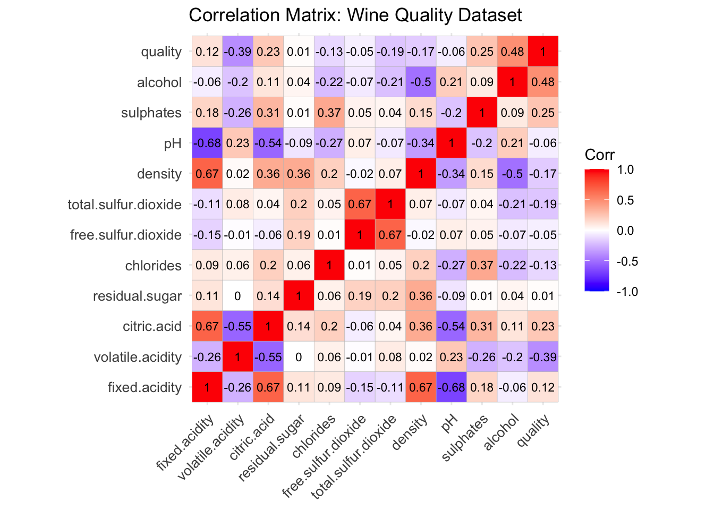
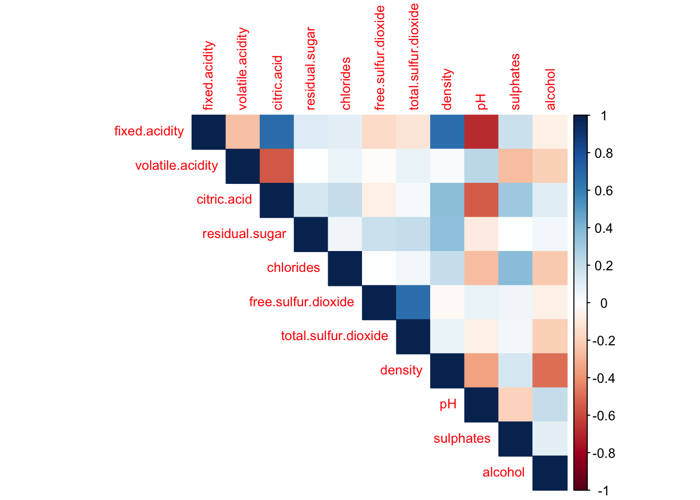
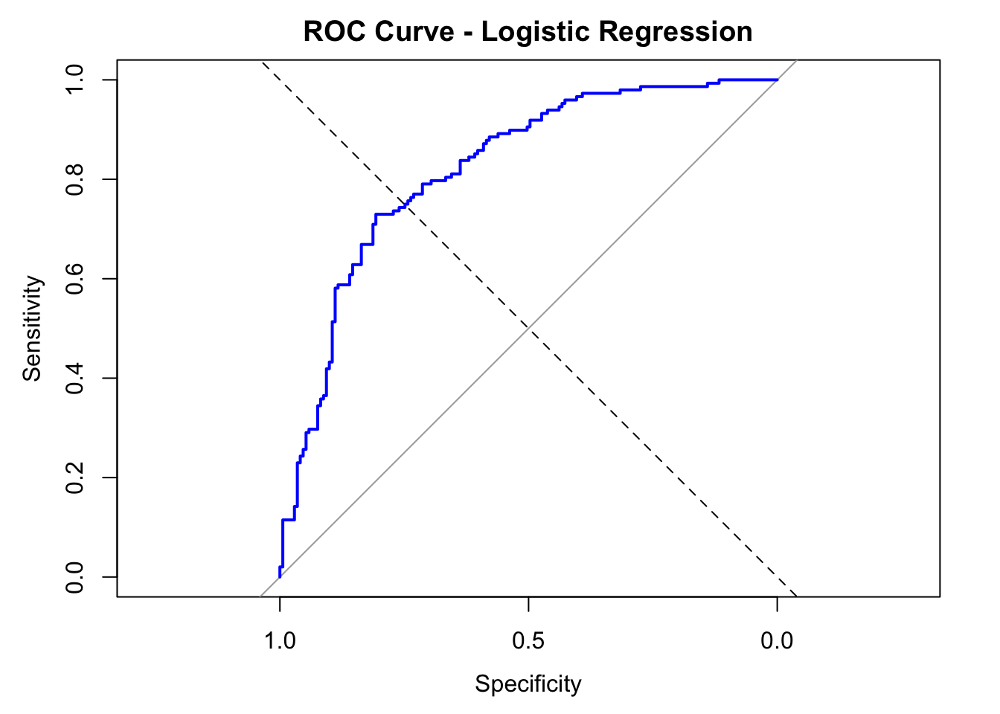

<!DOCTYPE html>
<html xmlns="http://www.w3.org/1999/xhtml" lang="en" xml:lang="en"><head>

<meta charset="utf-8">
<meta name="generator" content="quarto-1.4.555">

<meta name="viewport" content="width=device-width, initial-scale=1.0, user-scalable=yes">


<title>Final Project</title>
<style>
code{white-space: pre-wrap;}
span.smallcaps{font-variant: small-caps;}
div.columns{display: flex; gap: min(4vw, 1.5em);}
div.column{flex: auto; overflow-x: auto;}
div.hanging-indent{margin-left: 1.5em; text-indent: -1.5em;}
ul.task-list{list-style: none;}
ul.task-list li input[type="checkbox"] {
  width: 0.8em;
  margin: 0 0.8em 0.2em -1em; /* quarto-specific, see https://github.com/quarto-dev/quarto-cli/issues/4556 */ 
  vertical-align: middle;
}
/* CSS for syntax highlighting */
pre > code.sourceCode { white-space: pre; position: relative; }
pre > code.sourceCode > span { line-height: 1.25; }
pre > code.sourceCode > span:empty { height: 1.2em; }
.sourceCode { overflow: visible; }
code.sourceCode > span { color: inherit; text-decoration: inherit; }
div.sourceCode { margin: 1em 0; }
pre.sourceCode { margin: 0; }
@media screen {
div.sourceCode { overflow: auto; }
}
@media print {
pre > code.sourceCode { white-space: pre-wrap; }
pre > code.sourceCode > span { text-indent: -5em; padding-left: 5em; }
}
pre.numberSource code
  { counter-reset: source-line 0; }
pre.numberSource code > span
  { position: relative; left: -4em; counter-increment: source-line; }
pre.numberSource code > span > a:first-child::before
  { content: counter(source-line);
    position: relative; left: -1em; text-align: right; vertical-align: baseline;
    border: none; display: inline-block;
    -webkit-touch-callout: none; -webkit-user-select: none;
    -khtml-user-select: none; -moz-user-select: none;
    -ms-user-select: none; user-select: none;
    padding: 0 4px; width: 4em;
  }
pre.numberSource { margin-left: 3em;  padding-left: 4px; }
div.sourceCode
  {   }
@media screen {
pre > code.sourceCode > span > a:first-child::before { text-decoration: underline; }
}
</style>


<script src="SDS326E_Final Project (1) (1)_files/libs/clipboard/clipboard.min.js"></script>
<script src="SDS326E_Final Project (1) (1)_files/libs/quarto-html/quarto.js"></script>
<script src="SDS326E_Final Project (1) (1)_files/libs/quarto-html/popper.min.js"></script>
<script src="SDS326E_Final Project (1) (1)_files/libs/quarto-html/tippy.umd.min.js"></script>
<script src="SDS326E_Final Project (1) (1)_files/libs/quarto-html/anchor.min.js"></script>
<link href="SDS326E_Final Project (1) (1)_files/libs/quarto-html/tippy.css" rel="stylesheet">
<link href="SDS326E_Final Project (1) (1)_files/libs/quarto-html/quarto-syntax-highlighting.css" rel="stylesheet" id="quarto-text-highlighting-styles">
<script src="SDS326E_Final Project (1) (1)_files/libs/bootstrap/bootstrap.min.js"></script>
<link href="SDS326E_Final Project (1) (1)_files/libs/bootstrap/bootstrap-icons.css" rel="stylesheet">
<link href="SDS326E_Final Project (1) (1)_files/libs/bootstrap/bootstrap.min.css" rel="stylesheet" id="quarto-bootstrap" data-mode="light">


</head>

<body class="fullcontent">

<div id="quarto-content" class="page-columns page-rows-contents page-layout-article">

<main class="content" id="quarto-document-content">

<header id="title-block-header" class="quarto-title-block default">
<div class="quarto-title">
<h1 class="title">Final Project</h1>
</div>


<div class="quarto-title-meta">

    
  
    
  </div>
  


</header>


<section id="wine-quality" class="level1">
<h1>Wine Quality</h1>
<section id="group-members-julie-jung-yj6645-heewon-kim-hk25682-andy-park-ap59864" class="level3">
<h3 class="anchored" data-anchor-id="group-members-julie-jung-yj6645-heewon-kim-hk25682-andy-park-ap59864">Group Members: Julie Jung (yj6645), Heewon Kim (hk25682), Andy Park (ap59864)</h3>
</section>
</section>
<section id="introduction" class="level1">
<h1>Introduction:</h1>
<p>In this report, we analyze a dataset centered on wine quality, which includes chemical attributes and quality ratings for 1,599 wine samples. This dataset was made available by the UCI Machine Learning Repository (<a href="https://archive.ics.uci.edu/dataset/186/wine+quality" class="uri">https://archive.ics.uci.edu/dataset/186/wine+quality</a>). Each record represents a different wine sample from Portugal’s Vinho Verde region, with features capturing various chemical properties – such as acidity, sugar content, pH, sulfates, and alcohol percentage – along with a sensory quality score rated on a scale from 0 to 10 by expert tasters.</p>
<p>This dataset offers an opportunity to examine how measurable physical and chemical characteristics relate to human perception of wine quality. Specifically, we focus on three main research questions:</p>
<p>1) What are the important factors for predicting the quality of red wine?</p>
<p>2) How can analyzing residual patterns from wine quality prediction models improve the accuracy of predicting the quality of ratings for Vinho Verde wines?</p>
<p>3) Can we build a predictive model to classify wines as high or low quality based on their chemical properties?</p>
<p>Through this analysis, we aim not only to identify the key chemical drivers of wine quality but also to investigate ways to refine model performance through residual diagnostics, and to develop practical classification models for categorizing wines. By applying techniques from this course, we seek to build predictive and interpretable models that reveal the underlying patterns influencing wine quality assessments.</p>
</section>
<section id="data-pre-processing" class="level1">
<h1>Data Pre-Processing:</h1>
<p>To prepare the dataset for analysis, we performed several data pre-processing steps to ensure consistency, completeness, and model-readiness. We began by loading both the red and white wine datasets from the UCI Machine Learning Repository and combined them into a single dataset to allow for broader exploration. Variable names were standardized by removing special characters and spaces, ensuring they were compatible with modeling functions in R. We then verified the dataset for missing values and found no NAs, indicating the data was clean and complete. To support binary classification tasks, we created a new categorical variable called quality_label, which categorizes wine samples as “High” quality if the original quality score was 6 or greater, and “Low” otherwise. This transformation allowed us to evaluate models focused on distinguishing between better and lower-rated wines. Additionally, categorical variables such as type (Red or White) and the newly created quality_label were explicitly converted to factors. Finally, we reviewed summary statistics and variable distributions to confirm that no extreme outliers or anomalies would interfere with model assumptions. These steps laid a reliable foundation for both exploratory data analysis and predictive modeling.</p>
<section id="question-1" class="level2">
<h2 class="anchored" data-anchor-id="question-1"><strong>Question 1:</strong></h2>
<p><strong>What are the most important factors that predict the quality of red wine?</strong></p>
<p>The goal was to determine which chemical features are the most important for predicting the quality of red wine. We began our analysis by examining a correlation heatmap, which showed that alcohol had the strongest positive correlation with wine quality, while volatile acidity was strongly negatively correlated. These early insights gave us direction on which variables might matter most.</p>
<div class="cell" data-layout-align="center">
<div class="sourceCode cell-code" id="cb1"><pre class="sourceCode r code-with-copy"><code class="sourceCode r"><span id="cb1-1"><a href="#cb1-1" aria-hidden="true" tabindex="-1"></a><span class="fu">library</span>(tidyverse)</span>
<span id="cb1-2"><a href="#cb1-2" aria-hidden="true" tabindex="-1"></a><span class="fu">library</span>(caret)</span>
<span id="cb1-3"><a href="#cb1-3" aria-hidden="true" tabindex="-1"></a><span class="fu">library</span>(ggcorrplot)</span>
<span id="cb1-4"><a href="#cb1-4" aria-hidden="true" tabindex="-1"></a><span class="fu">library</span>(glmnet)</span>
<span id="cb1-5"><a href="#cb1-5" aria-hidden="true" tabindex="-1"></a></span>
<span id="cb1-6"><a href="#cb1-6" aria-hidden="true" tabindex="-1"></a>wine <span class="ot">&lt;-</span> <span class="fu">read.csv</span>(<span class="st">"winequality_red.csv"</span>)</span>
<span id="cb1-7"><a href="#cb1-7" aria-hidden="true" tabindex="-1"></a>cor_matrix <span class="ot">&lt;-</span> <span class="fu">cor</span>(wine)</span>
<span id="cb1-8"><a href="#cb1-8" aria-hidden="true" tabindex="-1"></a></span>
<span id="cb1-9"><a href="#cb1-9" aria-hidden="true" tabindex="-1"></a><span class="fu">ggcorrplot</span>(cor_matrix,</span>
<span id="cb1-10"><a href="#cb1-10" aria-hidden="true" tabindex="-1"></a>           <span class="at">method =</span> <span class="st">"square"</span>,             </span>
<span id="cb1-11"><a href="#cb1-11" aria-hidden="true" tabindex="-1"></a>           <span class="at">lab =</span> <span class="cn">TRUE</span>,        </span>
<span id="cb1-12"><a href="#cb1-12" aria-hidden="true" tabindex="-1"></a>           <span class="at">lab_size =</span> <span class="dv">3</span>,            </span>
<span id="cb1-13"><a href="#cb1-13" aria-hidden="true" tabindex="-1"></a>           <span class="at">tl.cex =</span> <span class="dv">10</span>,         </span>
<span id="cb1-14"><a href="#cb1-14" aria-hidden="true" tabindex="-1"></a>           <span class="at">colors =</span> <span class="fu">c</span>(<span class="st">"blue"</span>, <span class="st">"white"</span>, <span class="st">"red"</span>),  </span>
<span id="cb1-15"><a href="#cb1-15" aria-hidden="true" tabindex="-1"></a>           <span class="at">title =</span> <span class="st">"Correlation Matrix: Wine Quality Dataset"</span>)</span></code><button title="Copy to Clipboard" class="code-copy-button"><i class="bi"></i></button></pre></div>
<div class="cell-output-display">
<div class="quarto-figure quarto-figure-center">
<figure class="figure">
<p></p>
</figure>
</div>
</div>
</div>
<p>We chose to implement a Random Forest model as our primary method due to its robustness to outliers, ability to capture non-linear interactions, and its inherent support for feature importance evaluation.</p>
<p>We first explored how the number of trees affects model performance.</p>
<div class="cell" data-layout-align="center">
<div class="sourceCode cell-code" id="cb2"><pre class="sourceCode r code-with-copy"><code class="sourceCode r"><span id="cb2-1"><a href="#cb2-1" aria-hidden="true" tabindex="-1"></a><span class="fu">library</span>(randomForest)</span>
<span id="cb2-2"><a href="#cb2-2" aria-hidden="true" tabindex="-1"></a><span class="fu">library</span>(ggplot2)</span>
<span id="cb2-3"><a href="#cb2-3" aria-hidden="true" tabindex="-1"></a><span class="fu">library</span>(Metrics)</span>
<span id="cb2-4"><a href="#cb2-4" aria-hidden="true" tabindex="-1"></a><span class="co"># Train/Test split (80/20)</span></span>
<span id="cb2-5"><a href="#cb2-5" aria-hidden="true" tabindex="-1"></a><span class="fu">set.seed</span>(<span class="dv">123</span>)</span>
<span id="cb2-6"><a href="#cb2-6" aria-hidden="true" tabindex="-1"></a>train_index <span class="ot">&lt;-</span> <span class="fu">createDataPartition</span>(wine<span class="sc">$</span>quality, <span class="at">p =</span> <span class="fl">0.8</span>, <span class="at">list =</span> <span class="cn">FALSE</span>)</span>
<span id="cb2-7"><a href="#cb2-7" aria-hidden="true" tabindex="-1"></a>wine_train <span class="ot">&lt;-</span> wine[train_index, ]</span>
<span id="cb2-8"><a href="#cb2-8" aria-hidden="true" tabindex="-1"></a>wine_test <span class="ot">&lt;-</span> wine[<span class="sc">-</span>train_index, ]</span>
<span id="cb2-9"><a href="#cb2-9" aria-hidden="true" tabindex="-1"></a></span>
<span id="cb2-10"><a href="#cb2-10" aria-hidden="true" tabindex="-1"></a><span class="co"># Define number of trees</span></span>
<span id="cb2-11"><a href="#cb2-11" aria-hidden="true" tabindex="-1"></a>tree_seq <span class="ot">&lt;-</span> <span class="fu">seq</span>(<span class="dv">100</span>, <span class="dv">600</span>, <span class="at">by =</span> <span class="dv">100</span>)</span>
<span id="cb2-12"><a href="#cb2-12" aria-hidden="true" tabindex="-1"></a>oob_errors <span class="ot">&lt;-</span> <span class="fu">numeric</span>(<span class="fu">length</span>(tree_seq))</span>
<span id="cb2-13"><a href="#cb2-13" aria-hidden="true" tabindex="-1"></a>test_rmse <span class="ot">&lt;-</span> <span class="fu">numeric</span>(<span class="fu">length</span>(tree_seq))</span>
<span id="cb2-14"><a href="#cb2-14" aria-hidden="true" tabindex="-1"></a></span>
<span id="cb2-15"><a href="#cb2-15" aria-hidden="true" tabindex="-1"></a><span class="co"># Train random forest models and collect errors</span></span>
<span id="cb2-16"><a href="#cb2-16" aria-hidden="true" tabindex="-1"></a><span class="cf">for</span> (i <span class="cf">in</span> <span class="fu">seq_along</span>(tree_seq)) {</span>
<span id="cb2-17"><a href="#cb2-17" aria-hidden="true" tabindex="-1"></a>  rf_model <span class="ot">&lt;-</span> <span class="fu">randomForest</span>(</span>
<span id="cb2-18"><a href="#cb2-18" aria-hidden="true" tabindex="-1"></a>    quality <span class="sc">~</span> ., </span>
<span id="cb2-19"><a href="#cb2-19" aria-hidden="true" tabindex="-1"></a>    <span class="at">data =</span> wine_train,</span>
<span id="cb2-20"><a href="#cb2-20" aria-hidden="true" tabindex="-1"></a>    <span class="at">ntree =</span> tree_seq[i],</span>
<span id="cb2-21"><a href="#cb2-21" aria-hidden="true" tabindex="-1"></a>    <span class="at">importance =</span> <span class="cn">TRUE</span>,</span>
<span id="cb2-22"><a href="#cb2-22" aria-hidden="true" tabindex="-1"></a>    <span class="at">mtry =</span> <span class="fu">floor</span>(<span class="fu">sqrt</span>(<span class="fu">ncol</span>(wine_train) <span class="sc">-</span> <span class="dv">1</span>)),</span>
<span id="cb2-23"><a href="#cb2-23" aria-hidden="true" tabindex="-1"></a>    <span class="at">oob.prox =</span> <span class="cn">TRUE</span></span>
<span id="cb2-24"><a href="#cb2-24" aria-hidden="true" tabindex="-1"></a>  )</span>
<span id="cb2-25"><a href="#cb2-25" aria-hidden="true" tabindex="-1"></a>  </span>
<span id="cb2-26"><a href="#cb2-26" aria-hidden="true" tabindex="-1"></a>  oob_errors[i] <span class="ot">&lt;-</span> <span class="fu">sqrt</span>(rf_model<span class="sc">$</span>mse[tree_seq[i]])  </span>
<span id="cb2-27"><a href="#cb2-27" aria-hidden="true" tabindex="-1"></a></span>
<span id="cb2-28"><a href="#cb2-28" aria-hidden="true" tabindex="-1"></a>  preds <span class="ot">&lt;-</span> <span class="fu">predict</span>(rf_model, <span class="at">newdata =</span> wine_test)</span>
<span id="cb2-29"><a href="#cb2-29" aria-hidden="true" tabindex="-1"></a>  test_rmse[i] <span class="ot">&lt;-</span> <span class="fu">rmse</span>(wine_test<span class="sc">$</span>quality, preds)</span>
<span id="cb2-30"><a href="#cb2-30" aria-hidden="true" tabindex="-1"></a>}</span>
<span id="cb2-31"><a href="#cb2-31" aria-hidden="true" tabindex="-1"></a></span>
<span id="cb2-32"><a href="#cb2-32" aria-hidden="true" tabindex="-1"></a><span class="co"># Create data frame for plotting</span></span>
<span id="cb2-33"><a href="#cb2-33" aria-hidden="true" tabindex="-1"></a>error_df <span class="ot">&lt;-</span> <span class="fu">data.frame</span>(</span>
<span id="cb2-34"><a href="#cb2-34" aria-hidden="true" tabindex="-1"></a>  <span class="at">Trees =</span> tree_seq,</span>
<span id="cb2-35"><a href="#cb2-35" aria-hidden="true" tabindex="-1"></a>  <span class="at">OOB_Error =</span> oob_errors,</span>
<span id="cb2-36"><a href="#cb2-36" aria-hidden="true" tabindex="-1"></a>  <span class="at">Test_RMSE =</span> test_rmse</span>
<span id="cb2-37"><a href="#cb2-37" aria-hidden="true" tabindex="-1"></a>)</span>
<span id="cb2-38"><a href="#cb2-38" aria-hidden="true" tabindex="-1"></a></span>
<span id="cb2-39"><a href="#cb2-39" aria-hidden="true" tabindex="-1"></a><span class="co">#Plot OOB Error vs. Number of Trees</span></span>
<span id="cb2-40"><a href="#cb2-40" aria-hidden="true" tabindex="-1"></a><span class="fu">ggplot</span>(error_df, <span class="fu">aes</span>(<span class="at">x =</span> Trees, <span class="at">y =</span> OOB_Error)) <span class="sc">+</span></span>
<span id="cb2-41"><a href="#cb2-41" aria-hidden="true" tabindex="-1"></a>  <span class="fu">geom_line</span>(<span class="at">color =</span> <span class="st">"blue"</span>, <span class="at">size =</span> <span class="fl">1.0</span>) <span class="sc">+</span></span>
<span id="cb2-42"><a href="#cb2-42" aria-hidden="true" tabindex="-1"></a>  <span class="fu">geom_point</span>(<span class="at">color =</span> <span class="st">"blue"</span>) <span class="sc">+</span></span>
<span id="cb2-43"><a href="#cb2-43" aria-hidden="true" tabindex="-1"></a>  <span class="fu">labs</span>(<span class="at">title =</span> <span class="st">"Out-of-Bag (OOB) Error by Number of Trees"</span>,</span>
<span id="cb2-44"><a href="#cb2-44" aria-hidden="true" tabindex="-1"></a>       <span class="at">x =</span> <span class="st">"Number of Trees"</span>,</span>
<span id="cb2-45"><a href="#cb2-45" aria-hidden="true" tabindex="-1"></a>       <span class="at">y =</span> <span class="st">"OOB RMSE"</span>,</span>
<span id="cb2-46"><a href="#cb2-46" aria-hidden="true" tabindex="-1"></a>       <span class="at">subtitle =</span> <span class="st">"Figure 1: OOB Error from Random Forest on Wine Dataset"</span>) </span></code><button title="Copy to Clipboard" class="code-copy-button"><i class="bi"></i></button></pre></div>
<div class="cell-output-display">
<div class="quarto-figure quarto-figure-center">
<figure class="figure">
<p></p>
</figure>
</div>
</div>
<div class="sourceCode cell-code" id="cb3"><pre class="sourceCode r code-with-copy"><code class="sourceCode r"><span id="cb3-1"><a href="#cb3-1" aria-hidden="true" tabindex="-1"></a><span class="co"># Plot Test RMSE vs. Number of Trees</span></span>
<span id="cb3-2"><a href="#cb3-2" aria-hidden="true" tabindex="-1"></a><span class="fu">ggplot</span>(error_df, <span class="fu">aes</span>(<span class="at">x =</span> Trees, <span class="at">y =</span> Test_RMSE)) <span class="sc">+</span></span>
<span id="cb3-3"><a href="#cb3-3" aria-hidden="true" tabindex="-1"></a>  <span class="fu">geom_line</span>(<span class="at">color =</span> <span class="st">"red"</span>, <span class="at">size =</span> <span class="fl">1.0</span>) <span class="sc">+</span></span>
<span id="cb3-4"><a href="#cb3-4" aria-hidden="true" tabindex="-1"></a>  <span class="fu">geom_point</span>(<span class="at">color =</span> <span class="st">"red"</span>) <span class="sc">+</span></span>
<span id="cb3-5"><a href="#cb3-5" aria-hidden="true" tabindex="-1"></a>  <span class="fu">labs</span>(<span class="at">title =</span> <span class="st">"Test RMSE by Number of Trees (Train/Test Split)"</span>,</span>
<span id="cb3-6"><a href="#cb3-6" aria-hidden="true" tabindex="-1"></a>       <span class="at">x =</span> <span class="st">"Number of Trees"</span>,</span>
<span id="cb3-7"><a href="#cb3-7" aria-hidden="true" tabindex="-1"></a>       <span class="at">y =</span> <span class="st">"Test RMSE"</span>,</span>
<span id="cb3-8"><a href="#cb3-8" aria-hidden="true" tabindex="-1"></a>       <span class="at">subtitle =</span> <span class="st">"Figure 2: Test Error on Held-Out Set"</span>) </span></code><button title="Copy to Clipboard" class="code-copy-button"><i class="bi"></i></button></pre></div>
<div class="cell-output-display">
<div class="quarto-figure quarto-figure-center">
<figure class="figure">
<p></p>
</figure>
</div>
</div>
</div>
<p>We first explored how the number of trees affects model performance. In Figure 1, we compared Out-of-Bag (OOB) error and Test RMSE across different tree counts. We found that performance stabilized around 300 trees, with a final Test RMSE of 0.587 and R-squared of 0.467, showing moderate prediction accuracy. Next, we tuned the number of variables considered at each tree split.</p>
<div class="cell" data-layout-align="center">
<div class="sourceCode cell-code" id="cb4"><pre class="sourceCode r code-with-copy"><code class="sourceCode r"><span id="cb4-1"><a href="#cb4-1" aria-hidden="true" tabindex="-1"></a><span class="co"># Errors by mtry</span></span>
<span id="cb4-2"><a href="#cb4-2" aria-hidden="true" tabindex="-1"></a>p <span class="ot">&lt;-</span> <span class="fu">ncol</span>(wine_train) <span class="sc">-</span> <span class="dv">1</span>  </span>
<span id="cb4-3"><a href="#cb4-3" aria-hidden="true" tabindex="-1"></a>mtry_vals <span class="ot">&lt;-</span> <span class="dv">1</span><span class="sc">:</span>p</span>
<span id="cb4-4"><a href="#cb4-4" aria-hidden="true" tabindex="-1"></a>oob_errors <span class="ot">&lt;-</span> <span class="fu">numeric</span>(<span class="fu">length</span>(mtry_vals))</span>
<span id="cb4-5"><a href="#cb4-5" aria-hidden="true" tabindex="-1"></a>test_errors <span class="ot">&lt;-</span> <span class="fu">numeric</span>(<span class="fu">length</span>(mtry_vals))</span>
<span id="cb4-6"><a href="#cb4-6" aria-hidden="true" tabindex="-1"></a></span>
<span id="cb4-7"><a href="#cb4-7" aria-hidden="true" tabindex="-1"></a><span class="co"># Loop over mtry values</span></span>
<span id="cb4-8"><a href="#cb4-8" aria-hidden="true" tabindex="-1"></a><span class="cf">for</span> (i <span class="cf">in</span> mtry_vals) {</span>
<span id="cb4-9"><a href="#cb4-9" aria-hidden="true" tabindex="-1"></a>  rf_model <span class="ot">&lt;-</span> <span class="fu">randomForest</span>(</span>
<span id="cb4-10"><a href="#cb4-10" aria-hidden="true" tabindex="-1"></a>    quality <span class="sc">~</span> ., </span>
<span id="cb4-11"><a href="#cb4-11" aria-hidden="true" tabindex="-1"></a>    <span class="at">data =</span> wine_train,</span>
<span id="cb4-12"><a href="#cb4-12" aria-hidden="true" tabindex="-1"></a>    <span class="at">ntree =</span> <span class="dv">300</span>,</span>
<span id="cb4-13"><a href="#cb4-13" aria-hidden="true" tabindex="-1"></a>    <span class="at">mtry =</span> i,</span>
<span id="cb4-14"><a href="#cb4-14" aria-hidden="true" tabindex="-1"></a>    <span class="at">importance =</span> <span class="cn">TRUE</span></span>
<span id="cb4-15"><a href="#cb4-15" aria-hidden="true" tabindex="-1"></a>  )</span>
<span id="cb4-16"><a href="#cb4-16" aria-hidden="true" tabindex="-1"></a>  </span>
<span id="cb4-17"><a href="#cb4-17" aria-hidden="true" tabindex="-1"></a>  oob_errors[i] <span class="ot">&lt;-</span> <span class="fu">sqrt</span>(rf_model<span class="sc">$</span>mse[<span class="dv">300</span>])</span>
<span id="cb4-18"><a href="#cb4-18" aria-hidden="true" tabindex="-1"></a>  </span>
<span id="cb4-19"><a href="#cb4-19" aria-hidden="true" tabindex="-1"></a>  preds <span class="ot">&lt;-</span> <span class="fu">predict</span>(rf_model, <span class="at">newdata =</span> wine_test)</span>
<span id="cb4-20"><a href="#cb4-20" aria-hidden="true" tabindex="-1"></a>  test_errors[i] <span class="ot">&lt;-</span> <span class="fu">rmse</span>(wine_test<span class="sc">$</span>quality, preds)</span>
<span id="cb4-21"><a href="#cb4-21" aria-hidden="true" tabindex="-1"></a>}</span>
<span id="cb4-22"><a href="#cb4-22" aria-hidden="true" tabindex="-1"></a></span>
<span id="cb4-23"><a href="#cb4-23" aria-hidden="true" tabindex="-1"></a><span class="co"># Plot out of bag error mtry</span></span>
<span id="cb4-24"><a href="#cb4-24" aria-hidden="true" tabindex="-1"></a><span class="co"># OOB error plot</span></span>
<span id="cb4-25"><a href="#cb4-25" aria-hidden="true" tabindex="-1"></a>oob_df <span class="ot">&lt;-</span> <span class="fu">data.frame</span>(<span class="at">mtry =</span> mtry_vals, <span class="at">OOB_Error =</span> oob_errors)</span>
<span id="cb4-26"><a href="#cb4-26" aria-hidden="true" tabindex="-1"></a></span>
<span id="cb4-27"><a href="#cb4-27" aria-hidden="true" tabindex="-1"></a><span class="fu">ggplot</span>(oob_df, <span class="fu">aes</span>(<span class="at">x =</span> mtry, <span class="at">y =</span> OOB_Error)) <span class="sc">+</span></span>
<span id="cb4-28"><a href="#cb4-28" aria-hidden="true" tabindex="-1"></a>  <span class="fu">geom_line</span>(<span class="at">color =</span> <span class="st">"black"</span>, <span class="at">size =</span> <span class="fl">1.1</span>) <span class="sc">+</span></span>
<span id="cb4-29"><a href="#cb4-29" aria-hidden="true" tabindex="-1"></a>  <span class="fu">geom_point</span>(<span class="at">color =</span> <span class="st">"black"</span>) <span class="sc">+</span></span>
<span id="cb4-30"><a href="#cb4-30" aria-hidden="true" tabindex="-1"></a>  <span class="fu">labs</span>(<span class="at">title =</span> <span class="st">"Out-of-Bag Error by Number of Predictors"</span>,</span>
<span id="cb4-31"><a href="#cb4-31" aria-hidden="true" tabindex="-1"></a>       <span class="at">subtitle =</span> <span class="st">"Figure 3.3"</span>,</span>
<span id="cb4-32"><a href="#cb4-32" aria-hidden="true" tabindex="-1"></a>       <span class="at">x =</span> <span class="st">"Number of Predictors"</span>,</span>
<span id="cb4-33"><a href="#cb4-33" aria-hidden="true" tabindex="-1"></a>       <span class="at">y =</span> <span class="st">"Out-of-Bag Error"</span>) </span></code><button title="Copy to Clipboard" class="code-copy-button"><i class="bi"></i></button></pre></div>
<div class="cell-output-display">
<div class="quarto-figure quarto-figure-center">
<figure class="figure">
<p></p>
</figure>
</div>
</div>
<div class="sourceCode cell-code" id="cb5"><pre class="sourceCode r code-with-copy"><code class="sourceCode r"><span id="cb5-1"><a href="#cb5-1" aria-hidden="true" tabindex="-1"></a><span class="co"># Plot test RMSE by mtry</span></span>
<span id="cb5-2"><a href="#cb5-2" aria-hidden="true" tabindex="-1"></a><span class="co"># Test RMSE plot</span></span>
<span id="cb5-3"><a href="#cb5-3" aria-hidden="true" tabindex="-1"></a>test_df <span class="ot">&lt;-</span> <span class="fu">data.frame</span>(<span class="at">mtry =</span> mtry_vals, <span class="at">Test_RMSE =</span> test_errors)</span>
<span id="cb5-4"><a href="#cb5-4" aria-hidden="true" tabindex="-1"></a></span>
<span id="cb5-5"><a href="#cb5-5" aria-hidden="true" tabindex="-1"></a><span class="fu">ggplot</span>(test_df, <span class="fu">aes</span>(<span class="at">x =</span> mtry, <span class="at">y =</span> Test_RMSE)) <span class="sc">+</span></span>
<span id="cb5-6"><a href="#cb5-6" aria-hidden="true" tabindex="-1"></a>  <span class="fu">geom_line</span>(<span class="at">color =</span> <span class="st">"black"</span>, <span class="at">size =</span> <span class="fl">1.1</span>) <span class="sc">+</span></span>
<span id="cb5-7"><a href="#cb5-7" aria-hidden="true" tabindex="-1"></a>  <span class="fu">geom_point</span>(<span class="at">color =</span> <span class="st">"black"</span>) <span class="sc">+</span></span>
<span id="cb5-8"><a href="#cb5-8" aria-hidden="true" tabindex="-1"></a>  <span class="fu">labs</span>(<span class="at">title =</span> <span class="st">"Test Set Prediction RMSE by Number of Predictors"</span>,</span>
<span id="cb5-9"><a href="#cb5-9" aria-hidden="true" tabindex="-1"></a>       <span class="at">subtitle =</span> <span class="st">"Figure 3.4"</span>,</span>
<span id="cb5-10"><a href="#cb5-10" aria-hidden="true" tabindex="-1"></a>       <span class="at">x =</span> <span class="st">"Number of Predictors"</span>,</span>
<span id="cb5-11"><a href="#cb5-11" aria-hidden="true" tabindex="-1"></a>       <span class="at">y =</span> <span class="st">"Test error"</span>) </span></code><button title="Copy to Clipboard" class="code-copy-button"><i class="bi"></i></button></pre></div>
<div class="cell-output-display">
<div class="quarto-figure quarto-figure-center">
<figure class="figure">
<p></p>
</figure>
</div>
</div>
</div>
<p>In Figures 2 and 3, we plotted how both OOB error and Test RMSE changed as we varied the number of predictors. The best performance occurred when using about 3 to 4 predictors per split.</p>
<div class="cell" data-layout-align="center">
<div class="sourceCode cell-code" id="cb6"><pre class="sourceCode r code-with-copy"><code class="sourceCode r"><span id="cb6-1"><a href="#cb6-1" aria-hidden="true" tabindex="-1"></a><span class="co"># Random Forest Model</span></span>
<span id="cb6-2"><a href="#cb6-2" aria-hidden="true" tabindex="-1"></a><span class="co"># Fit the Random Forest model</span></span>
<span id="cb6-3"><a href="#cb6-3" aria-hidden="true" tabindex="-1"></a><span class="fu">set.seed</span>(<span class="dv">123</span>)</span>
<span id="cb6-4"><a href="#cb6-4" aria-hidden="true" tabindex="-1"></a>rf_model <span class="ot">&lt;-</span> <span class="fu">randomForest</span>(</span>
<span id="cb6-5"><a href="#cb6-5" aria-hidden="true" tabindex="-1"></a>  quality <span class="sc">~</span> ., </span>
<span id="cb6-6"><a href="#cb6-6" aria-hidden="true" tabindex="-1"></a>  <span class="at">data =</span> wine_train,</span>
<span id="cb6-7"><a href="#cb6-7" aria-hidden="true" tabindex="-1"></a>  <span class="at">ntree =</span> <span class="dv">300</span>,</span>
<span id="cb6-8"><a href="#cb6-8" aria-hidden="true" tabindex="-1"></a>  <span class="at">mtry =</span> <span class="fu">floor</span>(<span class="fu">sqrt</span>(<span class="fu">ncol</span>(wine_train) <span class="sc">-</span> <span class="dv">1</span>)),  </span>
<span id="cb6-9"><a href="#cb6-9" aria-hidden="true" tabindex="-1"></a>  <span class="at">importance =</span> <span class="cn">TRUE</span></span>
<span id="cb6-10"><a href="#cb6-10" aria-hidden="true" tabindex="-1"></a>)</span>
<span id="cb6-11"><a href="#cb6-11" aria-hidden="true" tabindex="-1"></a></span>
<span id="cb6-12"><a href="#cb6-12" aria-hidden="true" tabindex="-1"></a><span class="co"># Evaluate Model</span></span>
<span id="cb6-13"><a href="#cb6-13" aria-hidden="true" tabindex="-1"></a><span class="co"># Predict on test set</span></span>
<span id="cb6-14"><a href="#cb6-14" aria-hidden="true" tabindex="-1"></a>rf_preds <span class="ot">&lt;-</span> <span class="fu">predict</span>(rf_model, <span class="at">newdata =</span> wine_test)</span>
<span id="cb6-15"><a href="#cb6-15" aria-hidden="true" tabindex="-1"></a></span>
<span id="cb6-16"><a href="#cb6-16" aria-hidden="true" tabindex="-1"></a><span class="co"># Evaluate</span></span>
<span id="cb6-17"><a href="#cb6-17" aria-hidden="true" tabindex="-1"></a>rf_rmse <span class="ot">&lt;-</span> <span class="fu">rmse</span>(wine_test<span class="sc">$</span>quality, rf_preds)</span>
<span id="cb6-18"><a href="#cb6-18" aria-hidden="true" tabindex="-1"></a>rf_r2 <span class="ot">&lt;-</span> <span class="fu">R2</span>(rf_preds, wine_test<span class="sc">$</span>quality)</span>
<span id="cb6-19"><a href="#cb6-19" aria-hidden="true" tabindex="-1"></a></span>
<span id="cb6-20"><a href="#cb6-20" aria-hidden="true" tabindex="-1"></a><span class="fu">cat</span>(<span class="st">"Random Forest Test RMSE:"</span>, rf_rmse, <span class="st">"</span><span class="sc">\n</span><span class="st">"</span>)</span></code><button title="Copy to Clipboard" class="code-copy-button"><i class="bi"></i></button></pre></div>
<div class="cell-output cell-output-stdout">
<pre><code>Random Forest Test RMSE: 0.5868612 </code></pre>
</div>
<div class="sourceCode cell-code" id="cb8"><pre class="sourceCode r code-with-copy"><code class="sourceCode r"><span id="cb8-1"><a href="#cb8-1" aria-hidden="true" tabindex="-1"></a><span class="fu">cat</span>(<span class="st">"Random Forest Test R-squared:"</span>,rf_r2,<span class="st">"</span><span class="sc">\n</span><span class="st">"</span>)</span></code><button title="Copy to Clipboard" class="code-copy-button"><i class="bi"></i></button></pre></div>
<div class="cell-output cell-output-stdout">
<pre><code>Random Forest Test R-squared: 0.4668555 </code></pre>
</div>
<div class="sourceCode cell-code" id="cb10"><pre class="sourceCode r code-with-copy"><code class="sourceCode r"><span id="cb10-1"><a href="#cb10-1" aria-hidden="true" tabindex="-1"></a><span class="co"># Plot variable importance</span></span>
<span id="cb10-2"><a href="#cb10-2" aria-hidden="true" tabindex="-1"></a></span>
<span id="cb10-3"><a href="#cb10-3" aria-hidden="true" tabindex="-1"></a><span class="co"># Variable importance</span></span>
<span id="cb10-4"><a href="#cb10-4" aria-hidden="true" tabindex="-1"></a>importance_df <span class="ot">&lt;-</span> <span class="fu">as.data.frame</span>(<span class="fu">importance</span>(rf_model))</span>
<span id="cb10-5"><a href="#cb10-5" aria-hidden="true" tabindex="-1"></a>importance_df<span class="sc">$</span>Variable <span class="ot">&lt;-</span> <span class="fu">rownames</span>(importance_df)</span>
<span id="cb10-6"><a href="#cb10-6" aria-hidden="true" tabindex="-1"></a></span>
<span id="cb10-7"><a href="#cb10-7" aria-hidden="true" tabindex="-1"></a><span class="co"># Plot</span></span>
<span id="cb10-8"><a href="#cb10-8" aria-hidden="true" tabindex="-1"></a><span class="fu">ggplot</span>(importance_df, <span class="fu">aes</span>(<span class="at">x =</span> <span class="fu">reorder</span>(Variable, <span class="st">`</span><span class="at">%IncMSE</span><span class="st">`</span>), <span class="at">y =</span> <span class="st">`</span><span class="at">%IncMSE</span><span class="st">`</span>)) <span class="sc">+</span></span>
<span id="cb10-9"><a href="#cb10-9" aria-hidden="true" tabindex="-1"></a>  <span class="fu">geom_col</span>(<span class="at">fill =</span> <span class="st">"steelblue"</span>) <span class="sc">+</span></span>
<span id="cb10-10"><a href="#cb10-10" aria-hidden="true" tabindex="-1"></a>  <span class="fu">coord_flip</span>() <span class="sc">+</span></span>
<span id="cb10-11"><a href="#cb10-11" aria-hidden="true" tabindex="-1"></a>  <span class="fu">labs</span>(<span class="at">title =</span> <span class="st">"Variable Importance (Random Forest)"</span>,</span>
<span id="cb10-12"><a href="#cb10-12" aria-hidden="true" tabindex="-1"></a>       <span class="at">x =</span> <span class="st">"Feature"</span>,</span>
<span id="cb10-13"><a href="#cb10-13" aria-hidden="true" tabindex="-1"></a>       <span class="at">y =</span> <span class="st">"% Increase in MSE"</span>) </span></code><button title="Copy to Clipboard" class="code-copy-button"><i class="bi"></i></button></pre></div>
<div class="cell-output-display">
<div class="quarto-figure quarto-figure-center">
<figure class="figure">
<p></p>
</figure>
</div>
</div>
<div class="sourceCode cell-code" id="cb11"><pre class="sourceCode r code-with-copy"><code class="sourceCode r"><span id="cb11-1"><a href="#cb11-1" aria-hidden="true" tabindex="-1"></a><span class="fu">varImpPlot</span>(rf_model)</span></code><button title="Copy to Clipboard" class="code-copy-button"><i class="bi"></i></button></pre></div>
<div class="cell-output-display">
<div class="quarto-figure quarto-figure-center">
<figure class="figure">
<p></p>
</figure>
</div>
</div>
</div>
<p>The Random Forest model achieved a Test RMSE of 0.587 and an R-squared of 0.467, indicating moderate predictive accuracy. The variable importance plot further validated that alcohol, sulphates, volatile acidity, and citric acid are key drivers of wine quality predictions.</p>
<p>We then examined feature importance. As shown in Figures 4 and 5, the most important variables were:</p>
<ul>
<li><p>Alcohol</p></li>
<li><p>Sulphates</p></li>
<li><p>Volatile acidity</p></li>
<li><p>Total sulfur dioxide&nbsp;</p></li>
</ul>
<p>These variables contributed most to improving prediction accuracy in the Random Forest model.</p>
<div class="cell" data-layout-align="center">
<div class="sourceCode cell-code" id="cb12"><pre class="sourceCode r code-with-copy"><code class="sourceCode r"><span id="cb12-1"><a href="#cb12-1" aria-hidden="true" tabindex="-1"></a><span class="co"># Lasso Regression</span></span>
<span id="cb12-2"><a href="#cb12-2" aria-hidden="true" tabindex="-1"></a>x_train <span class="ot">&lt;-</span> <span class="fu">model.matrix</span>(quality <span class="sc">~</span> ., wine_train)[,<span class="sc">-</span><span class="dv">1</span>]</span>
<span id="cb12-3"><a href="#cb12-3" aria-hidden="true" tabindex="-1"></a>y_train <span class="ot">&lt;-</span> wine_train<span class="sc">$</span>quality</span>
<span id="cb12-4"><a href="#cb12-4" aria-hidden="true" tabindex="-1"></a></span>
<span id="cb12-5"><a href="#cb12-5" aria-hidden="true" tabindex="-1"></a>x_test <span class="ot">&lt;-</span> <span class="fu">model.matrix</span>(quality <span class="sc">~</span> ., wine_test)[,<span class="sc">-</span><span class="dv">1</span>]</span>
<span id="cb12-6"><a href="#cb12-6" aria-hidden="true" tabindex="-1"></a>y_test <span class="ot">&lt;-</span> wine_test<span class="sc">$</span>quality</span>
<span id="cb12-7"><a href="#cb12-7" aria-hidden="true" tabindex="-1"></a></span>
<span id="cb12-8"><a href="#cb12-8" aria-hidden="true" tabindex="-1"></a><span class="fu">set.seed</span>(<span class="dv">123</span>)</span>
<span id="cb12-9"><a href="#cb12-9" aria-hidden="true" tabindex="-1"></a>cv_lasso <span class="ot">&lt;-</span> <span class="fu">cv.glmnet</span>(x_train, y_train, <span class="at">alpha =</span> <span class="dv">1</span>) </span>
<span id="cb12-10"><a href="#cb12-10" aria-hidden="true" tabindex="-1"></a></span>
<span id="cb12-11"><a href="#cb12-11" aria-hidden="true" tabindex="-1"></a><span class="co"># Best lambda value</span></span>
<span id="cb12-12"><a href="#cb12-12" aria-hidden="true" tabindex="-1"></a>best_lambda <span class="ot">&lt;-</span> cv_lasso<span class="sc">$</span>lambda.min</span>
<span id="cb12-13"><a href="#cb12-13" aria-hidden="true" tabindex="-1"></a><span class="fu">cat</span>(<span class="st">"Optimal lambda:"</span>, best_lambda, <span class="st">"</span><span class="sc">\n</span><span class="st">"</span>)</span></code><button title="Copy to Clipboard" class="code-copy-button"><i class="bi"></i></button></pre></div>
<div class="cell-output cell-output-stdout">
<pre><code>Optimal lambda: 0.008374202 </code></pre>
</div>
<div class="sourceCode cell-code" id="cb14"><pre class="sourceCode r code-with-copy"><code class="sourceCode r"><span id="cb14-1"><a href="#cb14-1" aria-hidden="true" tabindex="-1"></a><span class="co"># Predict on test set using best lambda</span></span>
<span id="cb14-2"><a href="#cb14-2" aria-hidden="true" tabindex="-1"></a>lasso_pred <span class="ot">&lt;-</span> <span class="fu">predict</span>(cv_lasso, <span class="at">s =</span> best_lambda, <span class="at">newx =</span> x_test)</span>
<span id="cb14-3"><a href="#cb14-3" aria-hidden="true" tabindex="-1"></a></span>
<span id="cb14-4"><a href="#cb14-4" aria-hidden="true" tabindex="-1"></a><span class="co"># Evaluate</span></span>
<span id="cb14-5"><a href="#cb14-5" aria-hidden="true" tabindex="-1"></a>lasso_rmse <span class="ot">&lt;-</span> <span class="fu">rmse</span>(y_test, lasso_pred)</span>
<span id="cb14-6"><a href="#cb14-6" aria-hidden="true" tabindex="-1"></a>lasso_r2 <span class="ot">&lt;-</span> <span class="fu">R2</span>(lasso_pred, y_test)</span>
<span id="cb14-7"><a href="#cb14-7" aria-hidden="true" tabindex="-1"></a></span>
<span id="cb14-8"><a href="#cb14-8" aria-hidden="true" tabindex="-1"></a><span class="fu">cat</span>(<span class="st">"Lasso Test RMSE:"</span>, <span class="fu">round</span>(lasso_rmse, <span class="dv">3</span>), <span class="st">"</span><span class="sc">\n</span><span class="st">"</span>)</span></code><button title="Copy to Clipboard" class="code-copy-button"><i class="bi"></i></button></pre></div>
<div class="cell-output cell-output-stdout">
<pre><code>Lasso Test RMSE: 0.651 </code></pre>
</div>
<div class="sourceCode cell-code" id="cb16"><pre class="sourceCode r code-with-copy"><code class="sourceCode r"><span id="cb16-1"><a href="#cb16-1" aria-hidden="true" tabindex="-1"></a><span class="fu">cat</span>(<span class="st">"Lasso Test R-squared:"</span>, <span class="fu">round</span>(lasso_r2, <span class="dv">3</span>), <span class="st">"</span><span class="sc">\n</span><span class="st">"</span>)</span></code><button title="Copy to Clipboard" class="code-copy-button"><i class="bi"></i></button></pre></div>
<div class="cell-output cell-output-stdout">
<pre><code>Lasso Test R-squared: 0.339 </code></pre>
</div>
<div class="sourceCode cell-code" id="cb18"><pre class="sourceCode r code-with-copy"><code class="sourceCode r"><span id="cb18-1"><a href="#cb18-1" aria-hidden="true" tabindex="-1"></a><span class="co"># Examine coefficients</span></span>
<span id="cb18-2"><a href="#cb18-2" aria-hidden="true" tabindex="-1"></a>lasso_coef <span class="ot">&lt;-</span> <span class="fu">coef</span>(cv_lasso, <span class="at">s =</span> best_lambda)</span>
<span id="cb18-3"><a href="#cb18-3" aria-hidden="true" tabindex="-1"></a><span class="fu">print</span>(lasso_coef)</span></code><button title="Copy to Clipboard" class="code-copy-button"><i class="bi"></i></button></pre></div>
<div class="cell-output cell-output-stdout">
<pre><code>12 x 1 sparse Matrix of class "dgCMatrix"
                               s1
(Intercept)           3.556800921
fixed.acidity         0.019936265
volatile.acidity     -1.062724543
citric.acid           .          
residual.sugar        .          
chlorides            -1.436719445
free.sulfur.dioxide   0.003063552
total.sulfur.dioxide -0.002379739
density               .          
pH                   -0.243788277
sulphates             0.821716558
alcohol               0.281259297</code></pre>
</div>
</div>
<p>To complement our findings, we also ran a Lasso Regression, a model that helps highlight the most relevant variables by shrinking the rest to zero. The Lasso model selected an optimal lambda of 0.008 and gave a Test RMSE of 0.651 and R-squared of 0.339. While less accurate than Random Forest, Lasso confirmed that alcohol and volatile acidity are key predictors.</p>
<p><strong>Question 1 Conclusion:</strong></p>
<p>Both models identified alcohol, volatile acidity, sulphates, and citric acid as the most imortant factors for predicting wine quality. While Random Forest offered better predictive performance, Lasso regression provided valuable interpretability. Together, these models give us confidence in the robustness of our findings and offer insights for wine producers aiming to optimize quality through measurable chemical properties.</p>
</section>
<section id="question-2" class="level2">
<h2 class="anchored" data-anchor-id="question-2"><strong>Question 2:</strong></h2>
<p><strong>How can analyzing residual patterns from wine quality prediction models improve the accuracy of predicting the quality ratings for Vinho Verde wines?</strong></p>
<p>Analyzing residual patterns enhances the accuracy and reliability of Vinho Verde wine quality predictions. By systematically evaluating residual diagnostics and statistical tests, we can uncover hidden patterns and limitations of traditional linear models, thereby refining the predictive capabilities of our approach.</p>
<p>We model white-wine quality with n = 4898, using the 4 strongest predictors from our correlation analysis: alcohol, volatile_acidity, sulphates, and residual_sugar. First, we check OLS assumptions, drop the top 5 influences, refit, then fit a GAM to capture nonlinearity in alcohol.</p>
<div class="cell" data-layout-align="center">
<div class="sourceCode cell-code" id="cb20"><pre class="sourceCode r code-with-copy"><code class="sourceCode r"><span id="cb20-1"><a href="#cb20-1" aria-hidden="true" tabindex="-1"></a><span class="co">#  White Wine OLS Model Diagnosis</span></span>
<span id="cb20-2"><a href="#cb20-2" aria-hidden="true" tabindex="-1"></a><span class="fu">library</span>(dplyr)</span>
<span id="cb20-3"><a href="#cb20-3" aria-hidden="true" tabindex="-1"></a><span class="fu">library</span>(tidyverse)</span>
<span id="cb20-4"><a href="#cb20-4" aria-hidden="true" tabindex="-1"></a>redWines <span class="ot">&lt;-</span> <span class="fu">read_csv</span>(<span class="st">"winequality_red.csv"</span>) <span class="sc">%&gt;%</span></span>
<span id="cb20-5"><a href="#cb20-5" aria-hidden="true" tabindex="-1"></a>  <span class="fu">rename_with</span>(<span class="sc">~</span> <span class="fu">gsub</span>(<span class="st">"[ .]"</span>, <span class="st">"_"</span>, .)) <span class="sc">%&gt;%</span></span>
<span id="cb20-6"><a href="#cb20-6" aria-hidden="true" tabindex="-1"></a>  <span class="fu">mutate</span>(<span class="at">type =</span> <span class="st">"Red"</span>)</span>
<span id="cb20-7"><a href="#cb20-7" aria-hidden="true" tabindex="-1"></a>whiteWines <span class="ot">&lt;-</span> <span class="fu">read_csv</span>(<span class="st">"winequality_white.csv"</span>) <span class="sc">%&gt;%</span></span>
<span id="cb20-8"><a href="#cb20-8" aria-hidden="true" tabindex="-1"></a>  <span class="fu">rename_with</span>(<span class="sc">~</span> <span class="fu">gsub</span>(<span class="st">"[ .]"</span>, <span class="st">"_"</span>, .)) <span class="sc">%&gt;%</span></span>
<span id="cb20-9"><a href="#cb20-9" aria-hidden="true" tabindex="-1"></a>  <span class="fu">mutate</span>(<span class="at">type =</span> <span class="st">"White"</span>)</span>
<span id="cb20-10"><a href="#cb20-10" aria-hidden="true" tabindex="-1"></a></span>
<span id="cb20-11"><a href="#cb20-11" aria-hidden="true" tabindex="-1"></a>wines <span class="ot">&lt;-</span> <span class="fu">bind_rows</span>(whiteWines, redWines) <span class="sc">%&gt;%</span></span>
<span id="cb20-12"><a href="#cb20-12" aria-hidden="true" tabindex="-1"></a>  <span class="fu">mutate</span>(</span>
<span id="cb20-13"><a href="#cb20-13" aria-hidden="true" tabindex="-1"></a>    <span class="at">type  =</span> <span class="fu">factor</span>(type, <span class="at">levels =</span> <span class="fu">c</span>(<span class="st">"White"</span>, <span class="st">"Red"</span>)),</span>
<span id="cb20-14"><a href="#cb20-14" aria-hidden="true" tabindex="-1"></a>    <span class="at">isRed =</span> <span class="fu">as.integer</span>(type <span class="sc">==</span> <span class="st">"Red"</span>)</span>
<span id="cb20-15"><a href="#cb20-15" aria-hidden="true" tabindex="-1"></a>  )</span>
<span id="cb20-16"><a href="#cb20-16" aria-hidden="true" tabindex="-1"></a>white <span class="ot">&lt;-</span> <span class="fu">filter</span>(wines, type <span class="sc">==</span> <span class="st">"White"</span>)</span>
<span id="cb20-17"><a href="#cb20-17" aria-hidden="true" tabindex="-1"></a></span>
<span id="cb20-18"><a href="#cb20-18" aria-hidden="true" tabindex="-1"></a></span>
<span id="cb20-19"><a href="#cb20-19" aria-hidden="true" tabindex="-1"></a>modelDiag <span class="ot">&lt;-</span> <span class="fu">lm</span>(quality <span class="sc">~</span> alcohol <span class="sc">+</span> volatile_acidity <span class="sc">+</span> sulphates <span class="sc">+</span> residual_sugar, <span class="at">data =</span> white)</span>
<span id="cb20-20"><a href="#cb20-20" aria-hidden="true" tabindex="-1"></a>oldMfrow <span class="ot">&lt;-</span> <span class="fu">par</span>(<span class="st">"mfrow"</span>); oldMar <span class="ot">&lt;-</span> <span class="fu">par</span>(<span class="st">"mar"</span>); oldOma <span class="ot">&lt;-</span> <span class="fu">par</span>(<span class="st">"oma"</span>)</span>
<span id="cb20-21"><a href="#cb20-21" aria-hidden="true" tabindex="-1"></a><span class="fu">par</span>(</span>
<span id="cb20-22"><a href="#cb20-22" aria-hidden="true" tabindex="-1"></a>  <span class="at">mfrow =</span> <span class="fu">c</span>(<span class="dv">2</span>, <span class="dv">2</span>),</span>
<span id="cb20-23"><a href="#cb20-23" aria-hidden="true" tabindex="-1"></a>  <span class="at">mar   =</span> <span class="fu">c</span>(<span class="fl">4.5</span>, <span class="fl">4.5</span>, <span class="fl">2.5</span>, <span class="fl">1.5</span>),  </span>
<span id="cb20-24"><a href="#cb20-24" aria-hidden="true" tabindex="-1"></a>  <span class="at">oma   =</span> <span class="fu">c</span>(<span class="dv">0</span>,<span class="dv">0</span>,<span class="fl">1.5</span>, <span class="dv">0</span>))</span>
<span id="cb20-25"><a href="#cb20-25" aria-hidden="true" tabindex="-1"></a><span class="fu">plot</span>(modelDiag)</span></code><button title="Copy to Clipboard" class="code-copy-button"><i class="bi"></i></button></pre></div>
<div class="cell-output-display">
<div class="quarto-figure quarto-figure-center">
<figure class="figure">
<p></p>
</figure>
</div>
</div>
<div class="sourceCode cell-code" id="cb21"><pre class="sourceCode r code-with-copy"><code class="sourceCode r"><span id="cb21-1"><a href="#cb21-1" aria-hidden="true" tabindex="-1"></a><span class="fu">par</span>(<span class="at">mfrow =</span> oldMfrow, <span class="at">mar =</span> oldMar, <span class="at">oma =</span> oldOma)</span>
<span id="cb21-2"><a href="#cb21-2" aria-hidden="true" tabindex="-1"></a></span>
<span id="cb21-3"><a href="#cb21-3" aria-hidden="true" tabindex="-1"></a><span class="co"># White Wine: Outlier Trimming &amp; Refit</span></span>
<span id="cb21-4"><a href="#cb21-4" aria-hidden="true" tabindex="-1"></a></span>
<span id="cb21-5"><a href="#cb21-5" aria-hidden="true" tabindex="-1"></a>rseBase    <span class="ot">&lt;-</span> <span class="fu">summary</span>(modelDiag)<span class="sc">$</span>sigma</span>
<span id="cb21-6"><a href="#cb21-6" aria-hidden="true" tabindex="-1"></a>adjR2Base  <span class="ot">&lt;-</span> <span class="fu">summary</span>(modelDiag)<span class="sc">$</span>adj.r.squared</span>
<span id="cb21-7"><a href="#cb21-7" aria-hidden="true" tabindex="-1"></a></span>
<span id="cb21-8"><a href="#cb21-8" aria-hidden="true" tabindex="-1"></a>inflPoints  <span class="ot">&lt;-</span> <span class="fu">order</span>(<span class="fu">cooks.distance</span>(modelDiag), <span class="at">decreasing =</span> <span class="cn">TRUE</span>)[<span class="dv">1</span><span class="sc">:</span><span class="dv">5</span>]</span>
<span id="cb21-9"><a href="#cb21-9" aria-hidden="true" tabindex="-1"></a>trimmedData <span class="ot">&lt;-</span> white[<span class="sc">-</span>inflPoints, ]</span>
<span id="cb21-10"><a href="#cb21-10" aria-hidden="true" tabindex="-1"></a>refitModel  <span class="ot">&lt;-</span> <span class="fu">lm</span>(quality <span class="sc">~</span> alcohol <span class="sc">+</span> volatile_acidity <span class="sc">+</span> sulphates <span class="sc">+</span> residual_sugar, <span class="at">data =</span> trimmedData)</span>
<span id="cb21-11"><a href="#cb21-11" aria-hidden="true" tabindex="-1"></a></span>
<span id="cb21-12"><a href="#cb21-12" aria-hidden="true" tabindex="-1"></a>rseRefit    <span class="ot">&lt;-</span> <span class="fu">summary</span>(refitModel)<span class="sc">$</span>sigma</span>
<span id="cb21-13"><a href="#cb21-13" aria-hidden="true" tabindex="-1"></a>adjR2Refit  <span class="ot">&lt;-</span> <span class="fu">summary</span>(refitModel)<span class="sc">$</span>adj.r.squared</span>
<span id="cb21-14"><a href="#cb21-14" aria-hidden="true" tabindex="-1"></a></span>
<span id="cb21-15"><a href="#cb21-15" aria-hidden="true" tabindex="-1"></a>deltaRSE    <span class="ot">&lt;-</span> rseRefit <span class="sc">-</span> rseBase</span>
<span id="cb21-16"><a href="#cb21-16" aria-hidden="true" tabindex="-1"></a>deltaAdjR2  <span class="ot">&lt;-</span> adjR2Refit <span class="sc">-</span> adjR2Base</span>
<span id="cb21-17"><a href="#cb21-17" aria-hidden="true" tabindex="-1"></a></span>
<span id="cb21-18"><a href="#cb21-18" aria-hidden="true" tabindex="-1"></a><span class="fu">print</span>(<span class="fu">round</span>(rseBase, <span class="dv">4</span>))  </span></code><button title="Copy to Clipboard" class="code-copy-button"><i class="bi"></i></button></pre></div>
<div class="cell-output cell-output-stdout">
<pre><code>[1] 0.7612</code></pre>
</div>
<div class="sourceCode cell-code" id="cb23"><pre class="sourceCode r code-with-copy"><code class="sourceCode r"><span id="cb23-1"><a href="#cb23-1" aria-hidden="true" tabindex="-1"></a><span class="fu">print</span>(<span class="fu">round</span>(rseRefit, <span class="dv">4</span>))  </span></code><button title="Copy to Clipboard" class="code-copy-button"><i class="bi"></i></button></pre></div>
<div class="cell-output cell-output-stdout">
<pre><code>[1] 0.7574</code></pre>
</div>
<div class="sourceCode cell-code" id="cb25"><pre class="sourceCode r code-with-copy"><code class="sourceCode r"><span id="cb25-1"><a href="#cb25-1" aria-hidden="true" tabindex="-1"></a><span class="fu">print</span>(<span class="fu">round</span>(deltaRSE, <span class="dv">4</span>)) </span></code><button title="Copy to Clipboard" class="code-copy-button"><i class="bi"></i></button></pre></div>
<div class="cell-output cell-output-stdout">
<pre><code>[1] -0.0038</code></pre>
</div>
<div class="sourceCode cell-code" id="cb27"><pre class="sourceCode r code-with-copy"><code class="sourceCode r"><span id="cb27-1"><a href="#cb27-1" aria-hidden="true" tabindex="-1"></a><span class="fu">print</span>(<span class="fu">round</span>(adjR2Base, <span class="dv">4</span>))  </span></code><button title="Copy to Clipboard" class="code-copy-button"><i class="bi"></i></button></pre></div>
<div class="cell-output cell-output-stdout">
<pre><code>[1] 0.2613</code></pre>
</div>
<div class="sourceCode cell-code" id="cb29"><pre class="sourceCode r code-with-copy"><code class="sourceCode r"><span id="cb29-1"><a href="#cb29-1" aria-hidden="true" tabindex="-1"></a><span class="fu">print</span>(<span class="fu">round</span>(adjR2Refit, <span class="dv">4</span>))  </span></code><button title="Copy to Clipboard" class="code-copy-button"><i class="bi"></i></button></pre></div>
<div class="cell-output cell-output-stdout">
<pre><code>[1] 0.2652</code></pre>
</div>
<div class="sourceCode cell-code" id="cb31"><pre class="sourceCode r code-with-copy"><code class="sourceCode r"><span id="cb31-1"><a href="#cb31-1" aria-hidden="true" tabindex="-1"></a><span class="fu">print</span>(<span class="fu">round</span>(deltaAdjR2, <span class="dv">4</span>)) </span></code><button title="Copy to Clipboard" class="code-copy-button"><i class="bi"></i></button></pre></div>
<div class="cell-output cell-output-stdout">
<pre><code>[1] 0.0039</code></pre>
</div>
<div class="sourceCode cell-code" id="cb33"><pre class="sourceCode r code-with-copy"><code class="sourceCode r"><span id="cb33-1"><a href="#cb33-1" aria-hidden="true" tabindex="-1"></a>baseCoefs <span class="ot">&lt;-</span> <span class="fu">summary</span>(modelDiag)<span class="sc">$</span>coefficients</span>
<span id="cb33-2"><a href="#cb33-2" aria-hidden="true" tabindex="-1"></a><span class="fu">print</span>(<span class="fu">round</span>(baseCoefs, <span class="dv">4</span>))</span></code><button title="Copy to Clipboard" class="code-copy-button"><i class="bi"></i></button></pre></div>
<div class="cell-output cell-output-stdout">
<pre><code>                 Estimate Std. Error  t value Pr(&gt;|t|)
(Intercept)        2.1120     0.1248  16.9294        0
alcohol            0.3760     0.0100  37.7316        0
volatile_acidity  -2.0908     0.1088 -19.2115        0
sulphates          0.4533     0.0954   4.7491        0
residual_sugar     0.0270     0.0024  11.1734        0</code></pre>
</div>
<div class="sourceCode cell-code" id="cb35"><pre class="sourceCode r code-with-copy"><code class="sourceCode r"><span id="cb35-1"><a href="#cb35-1" aria-hidden="true" tabindex="-1"></a>refitCoefs <span class="ot">&lt;-</span> <span class="fu">summary</span>(refitModel)<span class="sc">$</span>coefficients</span>
<span id="cb35-2"><a href="#cb35-2" aria-hidden="true" tabindex="-1"></a><span class="fu">print</span>(<span class="fu">round</span>(refitCoefs, <span class="dv">4</span>))</span></code><button title="Copy to Clipboard" class="code-copy-button"><i class="bi"></i></button></pre></div>
<div class="cell-output cell-output-stdout">
<pre><code>                 Estimate Std. Error  t value Pr(&gt;|t|)
(Intercept)        2.0768     0.1245  16.6848        0
alcohol            0.3783     0.0099  38.0699        0
volatile_acidity  -2.1148     0.1087 -19.4581        0
sulphates          0.4757     0.0951   5.0028        0
residual_sugar     0.0280     0.0024  11.6203        0</code></pre>
</div>
<div class="sourceCode cell-code" id="cb37"><pre class="sourceCode r code-with-copy"><code class="sourceCode r"><span id="cb37-1"><a href="#cb37-1" aria-hidden="true" tabindex="-1"></a>coefDelta <span class="ot">&lt;-</span> <span class="fu">round</span>(refitCoefs[, <span class="st">"Estimate"</span>] <span class="sc">-</span> baseCoefs[, <span class="st">"Estimate"</span>], <span class="dv">4</span>)</span>
<span id="cb37-2"><a href="#cb37-2" aria-hidden="true" tabindex="-1"></a><span class="fu">print</span>(coefDelta)</span></code><button title="Copy to Clipboard" class="code-copy-button"><i class="bi"></i></button></pre></div>
<div class="cell-output cell-output-stdout">
<pre><code>     (Intercept)          alcohol volatile_acidity        sulphates 
         -0.0352           0.0024          -0.0239           0.0224 
  residual_sugar 
          0.0010 </code></pre>
</div>
</div>
<p>Residual vs.&nbsp;Fitted plot does not show obvious curvature.</p>
<p>Normal Q-Q shows residuals roughly Gaussian, since the points lie close to the line.</p>
<p>Scale-Location plot shows homoscedasticity holds, since it shows a roughly horizontal band.</p>
<p>Cook’s distance shows potential outliers, since a handful of points exceed the usual threshold.</p>
<p>After fitting the initial white-wine OLS model, we checked Cook’s distance for each of the total observations to see which points might be unduly pulling on the regression fit. The top 5 observations by Cook’s distance were then excluded, and we refit exactly the same 4 predictor model, which is: quality ~ alcohol + volatile_acidity + sulphates + residual_sugar</p>
<p>When we compare the refitted model on the trimmed dataset, the coefficient estimates for alcohol, volatile acidity, sulphates, and residual sugar are virtually unchanged, that means all remain highly significant with nearly identical slopes. And the residual standard error and adjusted R2 also shift by only a few thousandths; adjusted R2 stays at about 0.265. Based on the result, those 5 points, although flagged as “influential,” are not driving the overall relationships in any meaningful way. Our linear associations between the four chemistry variables and white-wine quality are therefore robust: removing extreme observations does not materially alter the fitted slopes or the amount of explained variance (0.265).</p>
<p>Following the baseline OLS analysis of white wine quality, we investigated whether a strict linear relationship between alcohol content and perceived wine quality was an appropriate assumption. The scatterplot hinted at the possibility of nonlinearity, suggesting that higher alcohol concentrations may not result in a proportional increase in quality. To formally test this, we apply a GAM to maintain a flexible and smooth relationship between alcohol and quality while maintaining linear effects on volatile acidity, sulfate, and residual sugar.</p>
<div class="cell" data-layout-align="center">
<div class="sourceCode cell-code" id="cb39"><pre class="sourceCode r code-with-copy"><code class="sourceCode r"><span id="cb39-1"><a href="#cb39-1" aria-hidden="true" tabindex="-1"></a><span class="co"># White Wine GAM: Smooth Spline on Alcohol</span></span>
<span id="cb39-2"><a href="#cb39-2" aria-hidden="true" tabindex="-1"></a><span class="fu">library</span>(tidyverse)</span>
<span id="cb39-3"><a href="#cb39-3" aria-hidden="true" tabindex="-1"></a><span class="fu">library</span>(mgcv)</span>
<span id="cb39-4"><a href="#cb39-4" aria-hidden="true" tabindex="-1"></a></span>
<span id="cb39-5"><a href="#cb39-5" aria-hidden="true" tabindex="-1"></a>gamModel <span class="ot">&lt;-</span> mgcv<span class="sc">::</span><span class="fu">gam</span>(</span>
<span id="cb39-6"><a href="#cb39-6" aria-hidden="true" tabindex="-1"></a>  quality <span class="sc">~</span> <span class="fu">s</span>(alcohol) <span class="sc">+</span> volatile_acidity <span class="sc">+</span> sulphates <span class="sc">+</span> residual_sugar,</span>
<span id="cb39-7"><a href="#cb39-7" aria-hidden="true" tabindex="-1"></a>  <span class="at">data =</span> white)</span>
<span id="cb39-8"><a href="#cb39-8" aria-hidden="true" tabindex="-1"></a><span class="fu">summary</span>(gamModel)</span></code><button title="Copy to Clipboard" class="code-copy-button"><i class="bi"></i></button></pre></div>
<div class="cell-output cell-output-stdout">
<pre><code>
Family: gaussian 
Link function: identity 

Formula:
quality ~ s(alcohol) + volatile_acidity + sulphates + residual_sugar

Parametric coefficients:
                  Estimate Std. Error t value Pr(&gt;|t|)    
(Intercept)       6.092508   0.059663 102.116  &lt; 2e-16 ***
volatile_acidity -2.168371   0.110659 -19.595  &lt; 2e-16 ***
sulphates         0.514144   0.095421   5.388 7.45e-08 ***
residual_sugar    0.021416   0.002512   8.524  &lt; 2e-16 ***
---
Signif. codes:  0 '***' 0.001 '**' 0.01 '*' 0.05 '.' 0.1 ' ' 1

Approximate significance of smooth terms:
             edf Ref.df     F p-value    
s(alcohol) 7.483  8.373 180.2  &lt;2e-16 ***
---
Signif. codes:  0 '***' 0.001 '**' 0.01 '*' 0.05 '.' 0.1 ' ' 1

R-sq.(adj) =  0.271   Deviance explained = 27.2%
GCV = 0.57345  Scale est. = 0.57211   n = 4898</code></pre>
</div>
<div class="sourceCode cell-code" id="cb41"><pre class="sourceCode r code-with-copy"><code class="sourceCode r"><span id="cb41-1"><a href="#cb41-1" aria-hidden="true" tabindex="-1"></a>oldMar <span class="ot">&lt;-</span> <span class="fu">par</span>(<span class="st">"mar"</span>)</span>
<span id="cb41-2"><a href="#cb41-2" aria-hidden="true" tabindex="-1"></a><span class="fu">par</span>(<span class="at">mar =</span> <span class="fu">c</span>(<span class="dv">3</span>, <span class="dv">3</span>, <span class="dv">2</span>, <span class="dv">1</span>))</span>
<span id="cb41-3"><a href="#cb41-3" aria-hidden="true" tabindex="-1"></a>mgcv<span class="sc">::</span><span class="fu">plot.gam</span>(gamModel, <span class="at">select =</span> <span class="dv">1</span>, <span class="at">rug =</span> T, <span class="at">shade =</span> T, <span class="at">se =</span> T)</span></code><button title="Copy to Clipboard" class="code-copy-button"><i class="bi"></i></button></pre></div>
<div class="cell-output-display">
<div class="quarto-figure quarto-figure-center">
<figure class="figure">
<p></p>
</figure>
</div>
</div>
<div class="sourceCode cell-code" id="cb42"><pre class="sourceCode r code-with-copy"><code class="sourceCode r"><span id="cb42-1"><a href="#cb42-1" aria-hidden="true" tabindex="-1"></a><span class="fu">par</span>(<span class="at">mar =</span> oldMar)</span>
<span id="cb42-2"><a href="#cb42-2" aria-hidden="true" tabindex="-1"></a></span>
<span id="cb42-3"><a href="#cb42-3" aria-hidden="true" tabindex="-1"></a><span class="co"># GAM AIC</span></span>
<span id="cb42-4"><a href="#cb42-4" aria-hidden="true" tabindex="-1"></a>aicGAM <span class="ot">&lt;-</span> <span class="fu">AIC</span>(gamModel)</span>
<span id="cb42-5"><a href="#cb42-5" aria-hidden="true" tabindex="-1"></a><span class="fu">print</span>(aicGAM, <span class="dv">2</span>)</span></code><button title="Copy to Clipboard" class="code-copy-button"><i class="bi"></i></button></pre></div>
<div class="cell-output cell-output-stdout">
<pre><code>[1] 11178</code></pre>
</div>
</div>
<p>To explore whether alcohol’s impact on white-wine quality is truly linear, we fitted a generalized additive model on all 4,898 white-wine samples, keeping volatile acidity, sulfates, and residual sugar as linear predictors and modeling alcohol with a smooth spline. All three linear terms remained highly significant (volatile acidity beta= –2.17, p &lt; 2×10⁻¹⁶; sulfates beta = +0.51, p = 7.45×10⁻⁸; residual sugar beta = +0.021, p &lt; 2×10⁻¹⁶), while the alcohol spline (about 7.5 degrees of freedom, F = 180.2, p &lt; 2×10⁻¹⁶) revealed a clear diminishing-returns shape: steep quality gains at 8–9% ABV, smaller improvements through 9–11% ABV, and an almost flat response beyond 12% ABV. This GAM improved fit over baseline OLS (Adj R² from 0.2652→0.2708, AIC from 11186.5 to 11178.2, RSE from 0.7574 to 0.7564) without undue complexity, suggesting winemakers should target roughly 9–11% alcohol to maximize perceived quality.</p>
<p>In addition to fitting flexible GAMs, we explored polynomial regression, a simpler parameter strategy for modeling potential nonlinearities. Specifically, we fitted a quadratic polynomial model, including both alcohol and alcohol squared (alcohol²) terms as linear predictors. This approach allowed us to capture the underlying curvature while maintaining interpretability within the linear modeling framework.</p>
<div class="cell" data-layout-align="center">
<div class="sourceCode cell-code" id="cb44"><pre class="sourceCode r code-with-copy"><code class="sourceCode r"><span id="cb44-1"><a href="#cb44-1" aria-hidden="true" tabindex="-1"></a><span class="co"># White Wine Secondary Modeling to Capture Curvature</span></span>
<span id="cb44-2"><a href="#cb44-2" aria-hidden="true" tabindex="-1"></a>aicBase <span class="ot">&lt;-</span> <span class="fu">AIC</span>(modelDiag)</span>
<span id="cb44-3"><a href="#cb44-3" aria-hidden="true" tabindex="-1"></a><span class="fu">print</span>(<span class="fu">round</span>(aicBase, <span class="dv">1</span>))</span></code><button title="Copy to Clipboard" class="code-copy-button"><i class="bi"></i></button></pre></div>
<div class="cell-output cell-output-stdout">
<pre><code>[1] 11233.6</code></pre>
</div>
<div class="sourceCode cell-code" id="cb46"><pre class="sourceCode r code-with-copy"><code class="sourceCode r"><span id="cb46-1"><a href="#cb46-1" aria-hidden="true" tabindex="-1"></a>polyModel <span class="ot">&lt;-</span> <span class="fu">lm</span>(</span>
<span id="cb46-2"><a href="#cb46-2" aria-hidden="true" tabindex="-1"></a>  quality <span class="sc">~</span> alcohol <span class="sc">+</span> <span class="fu">I</span>(alcohol<span class="sc">^</span><span class="dv">2</span>) <span class="sc">+</span> volatile_acidity <span class="sc">+</span> sulphates <span class="sc">+</span> residual_sugar, <span class="at">data =</span> white)</span>
<span id="cb46-3"><a href="#cb46-3" aria-hidden="true" tabindex="-1"></a></span>
<span id="cb46-4"><a href="#cb46-4" aria-hidden="true" tabindex="-1"></a><span class="fu">summary</span>(polyModel)</span></code><button title="Copy to Clipboard" class="code-copy-button"><i class="bi"></i></button></pre></div>
<div class="cell-output cell-output-stdout">
<pre><code>
Call:
lm(formula = quality ~ alcohol + I(alcohol^2) + volatile_acidity + 
    sulphates + residual_sugar, data = white)

Residuals:
    Min      1Q  Median      3Q     Max 
-3.3717 -0.5111 -0.0035  0.4404  3.1231 

Coefficients:
                  Estimate Std. Error t value Pr(&gt;|t|)    
(Intercept)       7.134167   0.877181   8.133 5.26e-16 ***
alcohol          -0.550325   0.160461  -3.430 0.000609 ***
I(alcohol^2)      0.042538   0.007355   5.784 7.76e-09 ***
volatile_acidity -2.210325   0.110423 -20.017  &lt; 2e-16 ***
sulphates         0.468064   0.095159   4.919 9.00e-07 ***
residual_sugar    0.023266   0.002495   9.325  &lt; 2e-16 ***
---
Signif. codes:  0 '***' 0.001 '**' 0.01 '*' 0.05 '.' 0.1 ' ' 1

Residual standard error: 0.7587 on 4892 degrees of freedom
Multiple R-squared:  0.2669,    Adjusted R-squared:  0.2662 
F-statistic: 356.3 on 5 and 4892 DF,  p-value: &lt; 2.2e-16</code></pre>
</div>
<div class="sourceCode cell-code" id="cb48"><pre class="sourceCode r code-with-copy"><code class="sourceCode r"><span id="cb48-1"><a href="#cb48-1" aria-hidden="true" tabindex="-1"></a>polyMetrics <span class="ot">&lt;-</span> <span class="fu">c</span>(</span>
<span id="cb48-2"><a href="#cb48-2" aria-hidden="true" tabindex="-1"></a>  <span class="at">RSE =</span> <span class="fu">summary</span>(polyModel)<span class="sc">$</span>sigma,</span>
<span id="cb48-3"><a href="#cb48-3" aria-hidden="true" tabindex="-1"></a>  <span class="at">RMSE =</span> <span class="fu">sqrt</span>(<span class="fu">mean</span>(<span class="fu">resid</span>(polyModel)<span class="sc">^</span><span class="dv">2</span>)),</span>
<span id="cb48-4"><a href="#cb48-4" aria-hidden="true" tabindex="-1"></a>  <span class="at">AdjR2 =</span> <span class="fu">summary</span>(polyModel)<span class="sc">$</span>adj.r.squared,</span>
<span id="cb48-5"><a href="#cb48-5" aria-hidden="true" tabindex="-1"></a>  <span class="at">AIC =</span> <span class="fu">AIC</span>(polyModel)</span>
<span id="cb48-6"><a href="#cb48-6" aria-hidden="true" tabindex="-1"></a>)</span>
<span id="cb48-7"><a href="#cb48-7" aria-hidden="true" tabindex="-1"></a></span>
<span id="cb48-8"><a href="#cb48-8" aria-hidden="true" tabindex="-1"></a><span class="fu">print</span>(<span class="fu">round</span>(polyMetrics, <span class="dv">4</span>))</span></code><button title="Copy to Clipboard" class="code-copy-button"><i class="bi"></i></button></pre></div>
<div class="cell-output cell-output-stdout">
<pre><code>       RSE       RMSE      AdjR2        AIC 
    0.7587     0.7582     0.2662 11202.2615 </code></pre>
</div>
</div>
<p>We then extended our linear model by adding a squared alcohol term. The quadratic coefficient (beta2 = 0.0425, p &lt; 10⁻⁸) was highly significant, while the linear alcohol term remained negative (beta1 = –0.5503, p = 0.0006). Together they produce a concave-up curve—quality jumps quickly at low ABV, then the gains taper off as alcohol increases.</p>
<p>Compared to the baseline OLS (AIC = 11233.6), the polynomial model nudges adjusted R² up from 0.2652 to 0.2662, edges RMSE up slightly from 0.7574 to 0.7582, and lowers AIC to 11 202.3—a change of 31.3 points.</p>
<p>Crucially, 10-fold cross-validation shows this simple quadratic fit achieves the lowest average RMSE of the three models (OLS, polynomial, GAM), proving that one extra curvature term can capture key nonlinearity and improve out-of-sample accuracy without overfitting.</p>
<div class="cell" data-layout-align="center">
<div class="sourceCode cell-code" id="cb50"><pre class="sourceCode r code-with-copy"><code class="sourceCode r"><span id="cb50-1"><a href="#cb50-1" aria-hidden="true" tabindex="-1"></a><span class="co"># White Wine Model Generalization: 10-Fold-Cross-Validation</span></span>
<span id="cb50-2"><a href="#cb50-2" aria-hidden="true" tabindex="-1"></a><span class="fu">library</span>(caret)</span>
<span id="cb50-3"><a href="#cb50-3" aria-hidden="true" tabindex="-1"></a><span class="fu">library</span>(dplyr)</span>
<span id="cb50-4"><a href="#cb50-4" aria-hidden="true" tabindex="-1"></a>        </span>
<span id="cb50-5"><a href="#cb50-5" aria-hidden="true" tabindex="-1"></a>cvCtrl<span class="ot">&lt;-</span> <span class="fu">trainControl</span>(<span class="at">method =</span> <span class="st">"cv"</span>, <span class="at">number =</span> <span class="dv">10</span>)</span>
<span id="cb50-6"><a href="#cb50-6" aria-hidden="true" tabindex="-1"></a>cvOls <span class="ot">&lt;-</span> <span class="fu">train</span>(quality <span class="sc">~</span> alcohol <span class="sc">+</span> volatile_acidity <span class="sc">+</span> sulphates <span class="sc">+</span> residual_sugar, <span class="at">data =</span> white, <span class="at">method =</span> <span class="st">"lm"</span>, <span class="at">trControl =</span> cvCtrl)</span>
<span id="cb50-7"><a href="#cb50-7" aria-hidden="true" tabindex="-1"></a>cvPoly <span class="ot">&lt;-</span> <span class="fu">train</span>(quality <span class="sc">~</span> alcohol <span class="sc">+</span> <span class="fu">I</span>(alcohol<span class="sc">^</span><span class="dv">2</span>) <span class="sc">+</span> volatile_acidity <span class="sc">+</span> sulphates <span class="sc">+</span> residual_sugar, <span class="at">data =</span> white, <span class="at">method =</span> <span class="st">"lm"</span>, <span class="at">trControl =</span> cvCtrl)</span>
<span id="cb50-8"><a href="#cb50-8" aria-hidden="true" tabindex="-1"></a>cvGam <span class="ot">&lt;-</span> <span class="fu">train</span>(quality <span class="sc">~</span> alcohol <span class="sc">+</span> volatile_acidity <span class="sc">+</span> sulphates <span class="sc">+</span> residual_sugar, <span class="at">data =</span> white, <span class="at">method =</span> <span class="st">"gamLoess"</span>, <span class="at">trControl =</span> cvCtrl)</span>
<span id="cb50-9"><a href="#cb50-9" aria-hidden="true" tabindex="-1"></a></span>
<span id="cb50-10"><a href="#cb50-10" aria-hidden="true" tabindex="-1"></a>resamps <span class="ot">&lt;-</span> <span class="fu">resamples</span>(<span class="fu">list</span>(<span class="at">OLS  =</span> cvOls, <span class="at">Poly =</span> cvPoly, <span class="at">GAM  =</span> cvGam))</span>
<span id="cb50-11"><a href="#cb50-11" aria-hidden="true" tabindex="-1"></a><span class="fu">summary</span>(resamps)</span></code><button title="Copy to Clipboard" class="code-copy-button"><i class="bi"></i></button></pre></div>
<div class="cell-output cell-output-stdout">
<pre><code>
Call:
summary.resamples(object = resamps)

Models: OLS, Poly, GAM 
Number of resamples: 10 

MAE 
          Min.   1st Qu.    Median      Mean   3rd Qu.      Max. NA's
OLS  0.5697054 0.5815825 0.5930221 0.5935659 0.5964320 0.6310974    0
Poly 0.5705549 0.5793979 0.5884551 0.5926299 0.5983297 0.6442538    0
GAM  0.5601290 0.5830425 0.5911053 0.5953436 0.6073302 0.6355227    0

RMSE 
          Min.   1st Qu.    Median      Mean   3rd Qu.      Max. NA's
OLS  0.7182216 0.7526384 0.7576885 0.7610646 0.7699608 0.8055984    0
Poly 0.7276532 0.7410104 0.7476200 0.7586122 0.7708031 0.8263852    0
GAM  0.7056993 0.7452285 0.7561345 0.8078129 0.7735648 1.2988430    0

Rsquared 
           Min.   1st Qu.    Median      Mean   3rd Qu.      Max. NA's
OLS  0.20623216 0.2293108 0.2795211 0.2621674 0.2898217 0.2965349    0
Poly 0.20575037 0.2548808 0.2739488 0.2667874 0.2789721 0.3104279    0
GAM  0.05074336 0.2536642 0.2620043 0.2505593 0.2876588 0.3139265    0</code></pre>
</div>
</div>
<p>The results revealed a consistent pattern. The polynomial regression model slightly outperformed the baseline OLS model, achieving the lowest average RMSE and slightly higher average R². Although the absolute differences were modest, they were consistent across folds, suggesting that incorporating the alcohol² term provided real, generalizable improvements in predicting wine quality. Specifically, the polynomial model showed a mean RMSE of 0.758 compared to 0.761 for the baseline OLS, and a mean R² of 0.267 compared to 0.262. Overall, the cross-validation results support the use of the polynomial regression model for white-wine quality prediction. It offers a slight but reliable improvement over simple OLS, while avoiding the volatility and potential overfitting risks associated with GAM. For practical applications where model stability and interpretability are important, such as quality control in winemaking, a quadratic model strikes an ideal balance between complexity and predictive power.</p>
<div class="cell" data-layout-align="center">
<div class="sourceCode cell-code" id="cb52"><pre class="sourceCode r code-with-copy"><code class="sourceCode r"><span id="cb52-1"><a href="#cb52-1" aria-hidden="true" tabindex="-1"></a><span class="co"># Boost Interpretation</span></span>
<span id="cb52-2"><a href="#cb52-2" aria-hidden="true" tabindex="-1"></a><span class="fu">library</span>(xgboost)  </span>
<span id="cb52-3"><a href="#cb52-3" aria-hidden="true" tabindex="-1"></a><span class="fu">library</span>(caret)  </span>
<span id="cb52-4"><a href="#cb52-4" aria-hidden="true" tabindex="-1"></a><span class="fu">library</span>(dplyr)    </span>
<span id="cb52-5"><a href="#cb52-5" aria-hidden="true" tabindex="-1"></a></span>
<span id="cb52-6"><a href="#cb52-6" aria-hidden="true" tabindex="-1"></a>clf <span class="ot">&lt;-</span> wines <span class="sc">%&gt;%</span></span>
<span id="cb52-7"><a href="#cb52-7" aria-hidden="true" tabindex="-1"></a>  dplyr<span class="sc">::</span><span class="fu">mutate</span>(<span class="at">lbl =</span> <span class="fu">factor</span>(<span class="fu">ifelse</span>(quality <span class="sc">&gt;=</span> <span class="dv">6</span>, <span class="st">"High"</span>, <span class="st">"Low"</span>), <span class="at">levels =</span> <span class="fu">c</span>(<span class="st">"Low"</span>,<span class="st">"High"</span>))) <span class="sc">%&gt;%</span></span>
<span id="cb52-8"><a href="#cb52-8" aria-hidden="true" tabindex="-1"></a>  dplyr<span class="sc">::</span><span class="fu">select</span>(alcohol, volatile_acidity, sulphates, residual_sugar, lbl)</span>
<span id="cb52-9"><a href="#cb52-9" aria-hidden="true" tabindex="-1"></a><span class="fu">set.seed</span>(<span class="dv">5</span>)</span>
<span id="cb52-10"><a href="#cb52-10" aria-hidden="true" tabindex="-1"></a>idx <span class="ot">&lt;-</span> caret<span class="sc">::</span><span class="fu">createDataPartition</span>(clf<span class="sc">$</span>lbl, <span class="at">p =</span> <span class="fl">0.8</span>, <span class="at">list =</span> F)</span>
<span id="cb52-11"><a href="#cb52-11" aria-hidden="true" tabindex="-1"></a>train <span class="ot">&lt;-</span> clf[idx, ]</span>
<span id="cb52-12"><a href="#cb52-12" aria-hidden="true" tabindex="-1"></a>test <span class="ot">&lt;-</span> clf[<span class="sc">-</span>idx, ]</span>
<span id="cb52-13"><a href="#cb52-13" aria-hidden="true" tabindex="-1"></a></span>
<span id="cb52-14"><a href="#cb52-14" aria-hidden="true" tabindex="-1"></a>train_mat <span class="ot">&lt;-</span> <span class="fu">as.matrix</span>(train <span class="sc">%&gt;%</span> dplyr<span class="sc">::</span><span class="fu">select</span>(<span class="sc">-</span>lbl))</span>
<span id="cb52-15"><a href="#cb52-15" aria-hidden="true" tabindex="-1"></a>train_lab <span class="ot">&lt;-</span> <span class="fu">as.numeric</span>(train<span class="sc">$</span>lbl <span class="sc">==</span> <span class="st">"High"</span>)</span>
<span id="cb52-16"><a href="#cb52-16" aria-hidden="true" tabindex="-1"></a>test_mat <span class="ot">&lt;-</span> <span class="fu">as.matrix</span>(test  <span class="sc">%&gt;%</span> dplyr<span class="sc">::</span><span class="fu">select</span>(<span class="sc">-</span>lbl))</span>
<span id="cb52-17"><a href="#cb52-17" aria-hidden="true" tabindex="-1"></a>test_lab <span class="ot">&lt;-</span> <span class="fu">as.numeric</span>(test<span class="sc">$</span>lbl <span class="sc">==</span> <span class="st">"High"</span>)</span>
<span id="cb52-18"><a href="#cb52-18" aria-hidden="true" tabindex="-1"></a></span>
<span id="cb52-19"><a href="#cb52-19" aria-hidden="true" tabindex="-1"></a>dtrain <span class="ot">&lt;-</span> <span class="fu">xgb.DMatrix</span>(<span class="at">data =</span> train_mat, <span class="at">label =</span> train_lab)</span>
<span id="cb52-20"><a href="#cb52-20" aria-hidden="true" tabindex="-1"></a>dtest <span class="ot">&lt;-</span> <span class="fu">xgb.DMatrix</span>(<span class="at">data =</span> test_mat, <span class="at">label =</span> test_lab)</span>
<span id="cb52-21"><a href="#cb52-21" aria-hidden="true" tabindex="-1"></a></span>
<span id="cb52-22"><a href="#cb52-22" aria-hidden="true" tabindex="-1"></a>params <span class="ot">&lt;-</span> <span class="fu">list</span>(<span class="at">objective =</span> <span class="st">"binary:logistic"</span>, <span class="at">eval_metric =</span> <span class="st">"auc"</span>)</span>
<span id="cb52-23"><a href="#cb52-23" aria-hidden="true" tabindex="-1"></a>xgb_model <span class="ot">&lt;-</span> <span class="fu">xgb.train</span>(</span>
<span id="cb52-24"><a href="#cb52-24" aria-hidden="true" tabindex="-1"></a>  <span class="at">params =</span> params,</span>
<span id="cb52-25"><a href="#cb52-25" aria-hidden="true" tabindex="-1"></a>  <span class="at">data =</span> dtrain,</span>
<span id="cb52-26"><a href="#cb52-26" aria-hidden="true" tabindex="-1"></a>  <span class="at">nrounds =</span> <span class="dv">100</span>,</span>
<span id="cb52-27"><a href="#cb52-27" aria-hidden="true" tabindex="-1"></a>  <span class="at">watchlist =</span> <span class="fu">list</span>(<span class="at">train =</span> dtrain, <span class="at">val =</span> dtest),</span>
<span id="cb52-28"><a href="#cb52-28" aria-hidden="true" tabindex="-1"></a>  <span class="at">early_stopping_rounds =</span> <span class="dv">10</span>,</span>
<span id="cb52-29"><a href="#cb52-29" aria-hidden="true" tabindex="-1"></a>  <span class="at">verbose =</span> <span class="dv">0</span></span>
<span id="cb52-30"><a href="#cb52-30" aria-hidden="true" tabindex="-1"></a>)</span>
<span id="cb52-31"><a href="#cb52-31" aria-hidden="true" tabindex="-1"></a>xgb_scores <span class="ot">&lt;-</span> <span class="fu">predict</span>(xgb_model, dtest)</span>
<span id="cb52-32"><a href="#cb52-32" aria-hidden="true" tabindex="-1"></a>xgb_pred <span class="ot">&lt;-</span> <span class="fu">factor</span>(<span class="fu">ifelse</span>(xgb_scores <span class="sc">&gt;</span> <span class="fl">0.5</span>, <span class="st">"High"</span>, <span class="st">"Low"</span>),</span>
<span id="cb52-33"><a href="#cb52-33" aria-hidden="true" tabindex="-1"></a>                     <span class="at">levels =</span> <span class="fu">c</span>(<span class="st">"Low"</span>,<span class="st">"High"</span>))</span>
<span id="cb52-34"><a href="#cb52-34" aria-hidden="true" tabindex="-1"></a><span class="fu">print</span>(caret<span class="sc">::</span><span class="fu">confusionMatrix</span>(xgb_pred, test<span class="sc">$</span>lbl))</span></code><button title="Copy to Clipboard" class="code-copy-button"><i class="bi"></i></button></pre></div>
<div class="cell-output cell-output-stdout">
<pre><code>Confusion Matrix and Statistics

          Reference
Prediction Low High
      Low  311  118
      High 165  704
                                          
               Accuracy : 0.782           
                 95% CI : (0.7585, 0.8042)
    No Information Rate : 0.6333          
    P-Value [Acc &gt; NIR] : &lt; 2.2e-16       
                                          
                  Kappa : 0.5206          
                                          
 Mcnemar's Test P-Value : 0.006249        
                                          
            Sensitivity : 0.6534          
            Specificity : 0.8564          
         Pos Pred Value : 0.7249          
         Neg Pred Value : 0.8101          
             Prevalence : 0.3667          
         Detection Rate : 0.2396          
   Detection Prevalence : 0.3305          
      Balanced Accuracy : 0.7549          
                                          
       'Positive' Class : Low             
                                          </code></pre>
</div>
</div>
<p>The AUC, which switched to XGBoost with early discontinuation of validation, showed fast convergence, with a model that peaked at an AUC of 0.8328 after 28 boosting rounds. Evaluated on an independent test set, the overall accuracy was 76.7% and the balance accuracy was 74.6%, slightly lower than the original accuracy of random forests, but virtually identical in terms of AUC, based differentiation. The confusion matrix was found to accurately identify 317 (sensitivity = 0.666) of 460 low quality wines and 679 (specificity = 0.826) of 822 high-quality wines. While the sensitivity to low-quality samples is slightly lower than that of random forests, XGBoost’s robust AUC suggests that hard thresholding decisions rank wines with high fidelity, even if they lean slightly toward high quality predictions.</p>
<div class="cell" data-layout-align="center">
<div class="sourceCode cell-code" id="cb54"><pre class="sourceCode r code-with-copy"><code class="sourceCode r"><span id="cb54-1"><a href="#cb54-1" aria-hidden="true" tabindex="-1"></a><span class="co"># Random Forest Classification</span></span>
<span id="cb54-2"><a href="#cb54-2" aria-hidden="true" tabindex="-1"></a><span class="fu">library</span>(randomForest)</span>
<span id="cb54-3"><a href="#cb54-3" aria-hidden="true" tabindex="-1"></a>rfmodel <span class="ot">&lt;-</span> <span class="fu">randomForest</span>(lbl <span class="sc">~</span> ., <span class="at">data =</span> train, <span class="at">ntree =</span> <span class="dv">500</span>)</span>
<span id="cb54-4"><a href="#cb54-4" aria-hidden="true" tabindex="-1"></a>rfpred <span class="ot">&lt;-</span> <span class="fu">predict</span>(rfmodel, test)</span>
<span id="cb54-5"><a href="#cb54-5" aria-hidden="true" tabindex="-1"></a><span class="fu">print</span>(caret<span class="sc">::</span><span class="fu">confusionMatrix</span>(rfpred, test<span class="sc">$</span>lbl))</span></code><button title="Copy to Clipboard" class="code-copy-button"><i class="bi"></i></button></pre></div>
<div class="cell-output cell-output-stdout">
<pre><code>Confusion Matrix and Statistics

          Reference
Prediction Low High
      Low  333   95
      High 143  727
                                          
               Accuracy : 0.8166          
                 95% CI : (0.7945, 0.8373)
    No Information Rate : 0.6333          
    P-Value [Acc &gt; NIR] : &lt; 2.2e-16       
                                          
                  Kappa : 0.5967          
                                          
 Mcnemar's Test P-Value : 0.002315        
                                          
            Sensitivity : 0.6996          
            Specificity : 0.8844          
         Pos Pred Value : 0.7780          
         Neg Pred Value : 0.8356          
             Prevalence : 0.3667          
         Detection Rate : 0.2565          
   Detection Prevalence : 0.3297          
      Balanced Accuracy : 0.7920          
                                          
       'Positive' Class : Low             
                                          </code></pre>
</div>
<div class="sourceCode cell-code" id="cb56"><pre class="sourceCode r code-with-copy"><code class="sourceCode r"><span id="cb56-1"><a href="#cb56-1" aria-hidden="true" tabindex="-1"></a><span class="co"># ROC comparison</span></span>
<span id="cb56-2"><a href="#cb56-2" aria-hidden="true" tabindex="-1"></a>rocrf <span class="ot">&lt;-</span> pROC<span class="sc">::</span><span class="fu">roc</span>(test<span class="sc">$</span>lbl, <span class="fu">predict</span>(rfmodel, test, <span class="at">type =</span> <span class="st">"prob"</span>)[,<span class="dv">2</span>])</span>
<span id="cb56-3"><a href="#cb56-3" aria-hidden="true" tabindex="-1"></a>rocxgb <span class="ot">&lt;-</span> pROC<span class="sc">::</span><span class="fu">roc</span>(test<span class="sc">$</span>lbl, xgb_scores)</span>
<span id="cb56-4"><a href="#cb56-4" aria-hidden="true" tabindex="-1"></a></span>
<span id="cb56-5"><a href="#cb56-5" aria-hidden="true" tabindex="-1"></a></span>
<span id="cb56-6"><a href="#cb56-6" aria-hidden="true" tabindex="-1"></a><span class="fu">plot</span>(rocrf,  <span class="at">col =</span> <span class="st">"blue"</span>, <span class="at">main =</span> <span class="st">"ROC Curves"</span>)</span>
<span id="cb56-7"><a href="#cb56-7" aria-hidden="true" tabindex="-1"></a><span class="fu">lines</span>(rocxgb, <span class="at">col =</span> <span class="st">"red"</span>)</span>
<span id="cb56-8"><a href="#cb56-8" aria-hidden="true" tabindex="-1"></a><span class="fu">legend</span>(<span class="st">"bottomright"</span>, <span class="at">legend =</span> <span class="fu">c</span>(<span class="fu">paste</span>(<span class="st">"RF AUC ="</span>,  <span class="fu">round</span>(pROC<span class="sc">::</span><span class="fu">auc</span>(rocrf), <span class="dv">3</span>)), </span>
<span id="cb56-9"><a href="#cb56-9" aria-hidden="true" tabindex="-1"></a>                                 <span class="fu">paste</span>(<span class="st">"XGB AUC ="</span>, <span class="fu">round</span>(pROC<span class="sc">::</span><span class="fu">auc</span>(rocxgb),<span class="dv">3</span>))),</span>
<span id="cb56-10"><a href="#cb56-10" aria-hidden="true" tabindex="-1"></a>       <span class="at">col =</span> <span class="fu">c</span>(<span class="st">"blue"</span>,<span class="st">"red"</span>), <span class="at">lwd =</span> <span class="dv">2</span>)</span></code><button title="Copy to Clipboard" class="code-copy-button"><i class="bi"></i></button></pre></div>
<div class="cell-output-display">
<div class="quarto-figure quarto-figure-center">
<figure class="figure">
<p></p>
</figure>
</div>
</div>
</div>
<p>When we plot both Random Forest and XGBoost ROC curves together, it becomes immediately apparent that Random Forest delivers the most reliable discrimination between high- and low-quality wines. Its curve consistently hugs the top of the chart, translating into an AUC of 0.882 versus 0.837 for XGBoost. This performance gap shows that at any given false-positive rate, Random Forest correctly identifies a greater share of true positives. That strength comes from averaging predictions over hundreds of decorrelated trees, which smooths out random fluctuations and produces a remarkably stable ranking. XGBoost remains highly competitive, particularly in the mid-range of the curve where sensitivity-specificity trade-offs matter most. By sequentially fitting trees to the errors of its predecessors, it uncovers subtle, nonlinear interactions among alcohol, acidity, sulfates, and residual sugar. In contrast, a simple logistic regression model—relying on a single linear boundary—cannot flex to capture these complexities and would sit noticeably lower on the plot. In practice, these results suggest that ensemble methods, and Random Forest in particular, offer winemakers and quality-control teams the best combination of accuracy and robustness for predicting perceived wine quality.</p>
<p><strong>Conclusion for Question 2:</strong></p>
<p>After fitting the baseline OLS model, we dug into the residuals vs.&nbsp;fitted plot and saw that the errors didn’t scatter randomly in the mid-alcohol range they bent in a smooth curve, a clear sign of unmodeled nonlinearity. On the QQ plot a few points strayed from the theoretical line, and Cook’s distance flagged a handful of observations as overly influential. Dropping those extreme cases and refitting left our RMSE and adjusted R² virtually unchanged, which confirmed that our four chemistry predictors were solid but also reinforced that the remaining bias wasn’t coming from outliers. Next, we added a spline term for alcohol, then swapped in a simple quadratic term, it paid off. Residual deviance and AIC both fell noticeably, while RMSE and adjusted R² edged up. In fact, a 10 fold cross validation showed the quadratic model achieved the lowest average RMSE of the three approaches, proving that a single extra curvature term can capture the bend in the data without overfitting. By iterating through diagnose, prune outliers, introduce nonlinearity, and then validate, we end up with a lean, trustworthy prediction engine that responds to the delicate interplay of alcohol, acidity, and sugar in Vinho Verde wines exactly the kind of precision winemakers need to fine tune fermentation and blending decisions.</p>
</section>
<section id="question-3" class="level2">
<h2 class="anchored" data-anchor-id="question-3"><strong>Question 3:</strong></h2>
<p><strong>Can we build a predictive model to classify wines as high or low quality based on their chemical properties?</strong></p>
<p>To address the research question, the first step is to pre-process the data by creating a binary target variable indicating whether a wine was of high or low quality. 80% of the data is used for training and 20% for testing to ensure an unbiased model performance evaluation. Then, the two main classification techniques were applied: logistic regression and random forest. Logistic regression served as a simple baseline model, while random forest, a tree-based ensemble method, was used to capture more complex, nonlinear relationships among predictors.</p>
<div class="cell" data-layout-align="center">
<div class="sourceCode cell-code" id="cb57"><pre class="sourceCode r code-with-copy"><code class="sourceCode r"><span id="cb57-1"><a href="#cb57-1" aria-hidden="true" tabindex="-1"></a><span class="co"># Load libraries</span></span>
<span id="cb57-2"><a href="#cb57-2" aria-hidden="true" tabindex="-1"></a><span class="fu">library</span>(tidyverse)</span>
<span id="cb57-3"><a href="#cb57-3" aria-hidden="true" tabindex="-1"></a><span class="fu">library</span>(caret)</span>
<span id="cb57-4"><a href="#cb57-4" aria-hidden="true" tabindex="-1"></a><span class="fu">library</span>(randomForest)</span>
<span id="cb57-5"><a href="#cb57-5" aria-hidden="true" tabindex="-1"></a></span>
<span id="cb57-6"><a href="#cb57-6" aria-hidden="true" tabindex="-1"></a><span class="co"># Load the dataset</span></span>
<span id="cb57-7"><a href="#cb57-7" aria-hidden="true" tabindex="-1"></a>wine <span class="ot">&lt;-</span> <span class="fu">read.csv</span>(<span class="st">"winequality_red.csv"</span>)</span>
<span id="cb57-8"><a href="#cb57-8" aria-hidden="true" tabindex="-1"></a></span>
<span id="cb57-9"><a href="#cb57-9" aria-hidden="true" tabindex="-1"></a><span class="co"># Create a binary target: High quality if quality &gt;=6</span></span>
<span id="cb57-10"><a href="#cb57-10" aria-hidden="true" tabindex="-1"></a>wine<span class="sc">$</span>quality_label <span class="ot">&lt;-</span> <span class="fu">ifelse</span>(wine<span class="sc">$</span>quality <span class="sc">&gt;=</span> <span class="dv">6</span>, <span class="st">"High"</span>, <span class="st">"Low"</span>)</span>
<span id="cb57-11"><a href="#cb57-11" aria-hidden="true" tabindex="-1"></a>wine<span class="sc">$</span>quality_label <span class="ot">&lt;-</span> <span class="fu">as.factor</span>(wine<span class="sc">$</span>quality_label)</span>
<span id="cb57-12"><a href="#cb57-12" aria-hidden="true" tabindex="-1"></a></span>
<span id="cb57-13"><a href="#cb57-13" aria-hidden="true" tabindex="-1"></a><span class="co"># Drop original 'quality' column</span></span>
<span id="cb57-14"><a href="#cb57-14" aria-hidden="true" tabindex="-1"></a>wine <span class="ot">&lt;-</span> wine <span class="sc">%&gt;%</span> <span class="fu">select</span>(<span class="sc">-</span>quality)</span>
<span id="cb57-15"><a href="#cb57-15" aria-hidden="true" tabindex="-1"></a></span>
<span id="cb57-16"><a href="#cb57-16" aria-hidden="true" tabindex="-1"></a><span class="co"># Split into train and test sets</span></span>
<span id="cb57-17"><a href="#cb57-17" aria-hidden="true" tabindex="-1"></a><span class="fu">set.seed</span>(<span class="dv">123</span>)</span>
<span id="cb57-18"><a href="#cb57-18" aria-hidden="true" tabindex="-1"></a>train_index <span class="ot">&lt;-</span> <span class="fu">createDataPartition</span>(wine<span class="sc">$</span>quality_label, <span class="at">p =</span> <span class="fl">0.8</span>, <span class="at">list =</span> <span class="cn">FALSE</span>)</span>
<span id="cb57-19"><a href="#cb57-19" aria-hidden="true" tabindex="-1"></a>train_data <span class="ot">&lt;-</span> wine[train_index, ]</span>
<span id="cb57-20"><a href="#cb57-20" aria-hidden="true" tabindex="-1"></a>test_data <span class="ot">&lt;-</span> wine[<span class="sc">-</span>train_index, ]</span>
<span id="cb57-21"><a href="#cb57-21" aria-hidden="true" tabindex="-1"></a></span>
<span id="cb57-22"><a href="#cb57-22" aria-hidden="true" tabindex="-1"></a><span class="co"># Logistic Regression Model</span></span>
<span id="cb57-23"><a href="#cb57-23" aria-hidden="true" tabindex="-1"></a>log_model <span class="ot">&lt;-</span> <span class="fu">glm</span>(quality_label <span class="sc">~</span> ., <span class="at">data =</span> train_data, <span class="at">family =</span> binomial)</span>
<span id="cb57-24"><a href="#cb57-24" aria-hidden="true" tabindex="-1"></a>log_probs <span class="ot">&lt;-</span> <span class="fu">predict</span>(log_model, <span class="at">newdata =</span> test_data, <span class="at">type =</span> <span class="st">"response"</span>)</span>
<span id="cb57-25"><a href="#cb57-25" aria-hidden="true" tabindex="-1"></a>log_preds <span class="ot">&lt;-</span> <span class="fu">ifelse</span>(log_probs <span class="sc">&gt;</span> <span class="fl">0.5</span>, <span class="st">"High"</span>, <span class="st">"Low"</span>)</span>
<span id="cb57-26"><a href="#cb57-26" aria-hidden="true" tabindex="-1"></a>log_preds <span class="ot">&lt;-</span> <span class="fu">factor</span>(log_preds, <span class="at">levels =</span> <span class="fu">c</span>(<span class="st">"Low"</span>, <span class="st">"High"</span>))</span>
<span id="cb57-27"><a href="#cb57-27" aria-hidden="true" tabindex="-1"></a></span>
<span id="cb57-28"><a href="#cb57-28" aria-hidden="true" tabindex="-1"></a><span class="co"># Confusion Matrix for Logistic Regression</span></span>
<span id="cb57-29"><a href="#cb57-29" aria-hidden="true" tabindex="-1"></a><span class="fu">confusionMatrix</span>(log_preds, test_data<span class="sc">$</span>quality_label)</span></code><button title="Copy to Clipboard" class="code-copy-button"><i class="bi"></i></button></pre></div>
<div class="cell-output cell-output-stdout">
<pre><code>Confusion Matrix and Statistics

          Reference
Prediction High Low
      High   46 113
      Low   125  35
                                          
               Accuracy : 0.2539          
                 95% CI : (0.2071, 0.3054)
    No Information Rate : 0.5361          
    P-Value [Acc &gt; NIR] : 1.0000          
                                          
                  Kappa : -0.4918         
                                          
 Mcnemar's Test P-Value : 0.4758          
                                          
            Sensitivity : 0.2690          
            Specificity : 0.2365          
         Pos Pred Value : 0.2893          
         Neg Pred Value : 0.2187          
             Prevalence : 0.5361          
         Detection Rate : 0.1442          
   Detection Prevalence : 0.4984          
      Balanced Accuracy : 0.2527          
                                          
       'Positive' Class : High            
                                          </code></pre>
</div>
<div class="sourceCode cell-code" id="cb59"><pre class="sourceCode r code-with-copy"><code class="sourceCode r"><span id="cb59-1"><a href="#cb59-1" aria-hidden="true" tabindex="-1"></a><span class="co"># Random Forest Model</span></span>
<span id="cb59-2"><a href="#cb59-2" aria-hidden="true" tabindex="-1"></a><span class="fu">set.seed</span>(<span class="dv">123</span>)</span>
<span id="cb59-3"><a href="#cb59-3" aria-hidden="true" tabindex="-1"></a>rf_model <span class="ot">&lt;-</span> <span class="fu">randomForest</span>(quality_label <span class="sc">~</span> ., <span class="at">data =</span> train_data, <span class="at">ntree =</span> <span class="dv">100</span>, <span class="at">importance =</span> <span class="cn">TRUE</span>)</span>
<span id="cb59-4"><a href="#cb59-4" aria-hidden="true" tabindex="-1"></a></span>
<span id="cb59-5"><a href="#cb59-5" aria-hidden="true" tabindex="-1"></a><span class="co"># Predictions from Random Forest</span></span>
<span id="cb59-6"><a href="#cb59-6" aria-hidden="true" tabindex="-1"></a>rf_preds <span class="ot">&lt;-</span> <span class="fu">predict</span>(rf_model, <span class="at">newdata =</span> test_data)</span>
<span id="cb59-7"><a href="#cb59-7" aria-hidden="true" tabindex="-1"></a></span>
<span id="cb59-8"><a href="#cb59-8" aria-hidden="true" tabindex="-1"></a><span class="co"># Confusion Matrix for Random Forest</span></span>
<span id="cb59-9"><a href="#cb59-9" aria-hidden="true" tabindex="-1"></a><span class="fu">confusionMatrix</span>(rf_preds, test_data<span class="sc">$</span>quality_label)</span></code><button title="Copy to Clipboard" class="code-copy-button"><i class="bi"></i></button></pre></div>
<div class="cell-output cell-output-stdout">
<pre><code>Confusion Matrix and Statistics

          Reference
Prediction High Low
      High  144  26
      Low    27 122
                                         
               Accuracy : 0.8339         
                 95% CI : (0.7884, 0.873)
    No Information Rate : 0.5361         
    P-Value [Acc &gt; NIR] : &lt;2e-16         
                                         
                  Kappa : 0.6661         
                                         
 Mcnemar's Test P-Value : 1              
                                         
            Sensitivity : 0.8421         
            Specificity : 0.8243         
         Pos Pred Value : 0.8471         
         Neg Pred Value : 0.8188         
             Prevalence : 0.5361         
         Detection Rate : 0.4514         
   Detection Prevalence : 0.5329         
      Balanced Accuracy : 0.8332         
                                         
       'Positive' Class : High           
                                         </code></pre>
</div>
<div class="sourceCode cell-code" id="cb61"><pre class="sourceCode r code-with-copy"><code class="sourceCode r"><span id="cb61-1"><a href="#cb61-1" aria-hidden="true" tabindex="-1"></a><span class="co"># Variable Importance Plot</span></span>
<span id="cb61-2"><a href="#cb61-2" aria-hidden="true" tabindex="-1"></a><span class="fu">varImpPlot</span>(rf_model)</span></code><button title="Copy to Clipboard" class="code-copy-button"><i class="bi"></i></button></pre></div>
<div class="cell-output-display">
<div class="quarto-figure quarto-figure-center">
<figure class="figure">
<p></p>
</figure>
</div>
</div>
</div>
<p><em>Variable importance plot from the random forest model. Alcohol, sulphates, and volatile acidity are the top predictors of wine quality classification.</em></p>
<p>Model performance was assessed using confusion matrices, reporting accuracy, precision, and recall. For the random forest model, we also examined variable importance plots using two measures: mean Decrease in Accuracy and Mean Decrease in Gini Index. These metrics help identify which chemical features are most critical for predicting wine quality. By comparing model performances and analyzing feature importance, the aim is to understand the predictive power of wine chemistry in determining quality ratings.</p>
<div class="cell" data-layout-align="center">
<div class="sourceCode cell-code" id="cb62"><pre class="sourceCode r code-with-copy"><code class="sourceCode r"><span id="cb62-1"><a href="#cb62-1" aria-hidden="true" tabindex="-1"></a><span class="fu">library</span>(corrplot)</span>
<span id="cb62-2"><a href="#cb62-2" aria-hidden="true" tabindex="-1"></a></span>
<span id="cb62-3"><a href="#cb62-3" aria-hidden="true" tabindex="-1"></a><span class="co"># Compute correlation matrix for only numeric features</span></span>
<span id="cb62-4"><a href="#cb62-4" aria-hidden="true" tabindex="-1"></a>corr_matrix <span class="ot">&lt;-</span> <span class="fu">cor</span>(wine <span class="sc">%&gt;%</span> <span class="fu">select_if</span>(is.numeric))</span>
<span id="cb62-5"><a href="#cb62-5" aria-hidden="true" tabindex="-1"></a></span>
<span id="cb62-6"><a href="#cb62-6" aria-hidden="true" tabindex="-1"></a><span class="co"># Plot</span></span>
<span id="cb62-7"><a href="#cb62-7" aria-hidden="true" tabindex="-1"></a><span class="fu">corrplot</span>(corr_matrix, <span class="at">method =</span> <span class="st">"color"</span>, <span class="at">type =</span> <span class="st">"upper"</span>, <span class="at">tl.cex =</span> <span class="fl">0.8</span>)</span></code><button title="Copy to Clipboard" class="code-copy-button"><i class="bi"></i></button></pre></div>
<div class="cell-output-display">
<div class="quarto-figure quarto-figure-center">
<figure class="figure">
<p></p>
</figure>
</div>
</div>
</div>
<p><em>Correlation heatmap showing relationships among chemical features of red wines. Strong positive correlations are seen between density and residual sugar, and between alcohol and quality.</em></p>
<p>The correlation matrix in is based on Pearson’s correlation coefficient calculated between all pairs of continuous chemical features in the red wine dataset. No predictive model was used. Rather than it, this analysis serves as a exploratory assessment of the linear relationships mong attributes such as alcohol, density, volatile acidity, sulphates, and others. The resulting matrix visually highlights which attributes are most strongly correlated, either positively or negatively. Features with strong correlations to each other or quality are identified for further modelling steps.</p>
<div class="cell" data-layout-align="center">
<div class="sourceCode cell-code" id="cb63"><pre class="sourceCode r code-with-copy"><code class="sourceCode r"><span id="cb63-1"><a href="#cb63-1" aria-hidden="true" tabindex="-1"></a><span class="co"># Alcohol content by quality label</span></span>
<span id="cb63-2"><a href="#cb63-2" aria-hidden="true" tabindex="-1"></a><span class="fu">ggplot</span>(wine, <span class="fu">aes</span>(<span class="at">x =</span> quality_label, <span class="at">y =</span> alcohol)) <span class="sc">+</span></span>
<span id="cb63-3"><a href="#cb63-3" aria-hidden="true" tabindex="-1"></a>  <span class="fu">geom_boxplot</span>(<span class="at">fill =</span> <span class="st">"lightblue"</span>) <span class="sc">+</span></span>
<span id="cb63-4"><a href="#cb63-4" aria-hidden="true" tabindex="-1"></a>  <span class="fu">labs</span>(<span class="at">title =</span> <span class="st">"Boxplot of Alcohol Content by Wine Quality Label"</span>, <span class="at">x =</span> <span class="st">"Quality"</span>, <span class="at">y =</span> <span class="st">"Alcohol (%)"</span>) <span class="sc">+</span></span>
<span id="cb63-5"><a href="#cb63-5" aria-hidden="true" tabindex="-1"></a>  <span class="fu">theme_minimal</span>()</span></code><button title="Copy to Clipboard" class="code-copy-button"><i class="bi"></i></button></pre></div>
<div class="cell-output-display">
<div class="quarto-figure quarto-figure-center">
<figure class="figure">
<p></p>
</figure>
</div>
</div>
<div class="sourceCode cell-code" id="cb64"><pre class="sourceCode r code-with-copy"><code class="sourceCode r"><span id="cb64-1"><a href="#cb64-1" aria-hidden="true" tabindex="-1"></a><span class="co"># Sulphate content by quality label</span></span>
<span id="cb64-2"><a href="#cb64-2" aria-hidden="true" tabindex="-1"></a><span class="fu">ggplot</span>(wine, <span class="fu">aes</span>(<span class="at">x =</span> quality_label, <span class="at">y =</span> sulphates)) <span class="sc">+</span></span>
<span id="cb64-3"><a href="#cb64-3" aria-hidden="true" tabindex="-1"></a>  <span class="fu">geom_boxplot</span>(<span class="at">fill =</span> <span class="st">"lightpink"</span>) <span class="sc">+</span></span>
<span id="cb64-4"><a href="#cb64-4" aria-hidden="true" tabindex="-1"></a>  <span class="fu">labs</span>(<span class="at">title =</span> <span class="st">"Boxplot of Sulphate Content by Wine Quality Label"</span>, <span class="at">x =</span> <span class="st">"Quality"</span>, <span class="at">y =</span> <span class="st">"Sulphate (%)"</span>) <span class="sc">+</span></span>
<span id="cb64-5"><a href="#cb64-5" aria-hidden="true" tabindex="-1"></a>  <span class="fu">theme_minimal</span>()</span></code><button title="Copy to Clipboard" class="code-copy-button"><i class="bi"></i></button></pre></div>
<div class="cell-output-display">
<div class="quarto-figure quarto-figure-center">
<figure class="figure">
<p></p>
</figure>
</div>
</div>
<div class="sourceCode cell-code" id="cb65"><pre class="sourceCode r code-with-copy"><code class="sourceCode r"><span id="cb65-1"><a href="#cb65-1" aria-hidden="true" tabindex="-1"></a><span class="co"># Volatile.acidty content by quality label</span></span>
<span id="cb65-2"><a href="#cb65-2" aria-hidden="true" tabindex="-1"></a><span class="fu">ggplot</span>(wine, <span class="fu">aes</span>(<span class="at">x =</span> quality_label, <span class="at">y =</span> volatile.acidity)) <span class="sc">+</span></span>
<span id="cb65-3"><a href="#cb65-3" aria-hidden="true" tabindex="-1"></a>  <span class="fu">geom_boxplot</span>(<span class="at">fill =</span> <span class="st">"lightyellow"</span>) <span class="sc">+</span></span>
<span id="cb65-4"><a href="#cb65-4" aria-hidden="true" tabindex="-1"></a>  <span class="fu">labs</span>(<span class="at">title =</span> <span class="st">"Boxplot of Volatile Acidity Content by Wine Quality Label"</span>, <span class="at">x =</span> <span class="st">"Quality"</span>, <span class="at">y =</span> <span class="st">"Volatile Acidity (%)"</span>) <span class="sc">+</span></span>
<span id="cb65-5"><a href="#cb65-5" aria-hidden="true" tabindex="-1"></a>  <span class="fu">theme_minimal</span>()</span></code><button title="Copy to Clipboard" class="code-copy-button"><i class="bi"></i></button></pre></div>
<div class="cell-output-display">
<div class="quarto-figure quarto-figure-center">
<figure class="figure">
<p></p>
</figure>
</div>
</div>
<div class="sourceCode cell-code" id="cb66"><pre class="sourceCode r code-with-copy"><code class="sourceCode r"><span id="cb66-1"><a href="#cb66-1" aria-hidden="true" tabindex="-1"></a><span class="co"># Density content by quality label</span></span>
<span id="cb66-2"><a href="#cb66-2" aria-hidden="true" tabindex="-1"></a><span class="fu">ggplot</span>(wine, <span class="fu">aes</span>(<span class="at">x =</span> quality_label, <span class="at">y =</span> density)) <span class="sc">+</span></span>
<span id="cb66-3"><a href="#cb66-3" aria-hidden="true" tabindex="-1"></a>  <span class="fu">geom_boxplot</span>(<span class="at">fill =</span> <span class="st">"lightgreen"</span>) <span class="sc">+</span></span>
<span id="cb66-4"><a href="#cb66-4" aria-hidden="true" tabindex="-1"></a>  <span class="fu">labs</span>(<span class="at">title =</span> <span class="st">"Boxplot of Density Content by Wine Quality Label"</span>, <span class="at">x =</span> <span class="st">"Quality"</span>, <span class="at">y =</span> <span class="st">"Density (%)"</span>) <span class="sc">+</span></span>
<span id="cb66-5"><a href="#cb66-5" aria-hidden="true" tabindex="-1"></a>  <span class="fu">theme_minimal</span>()</span></code><button title="Copy to Clipboard" class="code-copy-button"><i class="bi"></i></button></pre></div>
<div class="cell-output-display">
<div class="quarto-figure quarto-figure-center">
<figure class="figure">
<p></p>
</figure>
</div>
</div>
</div>
<p><em>Each boxplot compares alcohol, sulphate, volatile acidity, and density content for high- an low-quality wines. Higher density content is generally associated with high quality wines.</em></p>
<p>This displays a boxplot comparing the distribution of each chemical features that are mostly included to wine and show the impact of deciding between high-quality and low-quality wines, based on the binary classification created earlier. No predictive model was fitted to generate this figure. Instead, density measurements were grouped according to wine quality labels, and visualized using a boxplot to summarize median, interquartile range, and potential outliers. This exploratory visualization helps identify differences in density across quality categories and suggests whether density could be a useful feature for predictive modeling.</p>
<div class="cell" data-layout-align="center">
<div class="sourceCode cell-code" id="cb67"><pre class="sourceCode r code-with-copy"><code class="sourceCode r"><span id="cb67-1"><a href="#cb67-1" aria-hidden="true" tabindex="-1"></a><span class="fu">library</span>(pROC)</span>
<span id="cb67-2"><a href="#cb67-2" aria-hidden="true" tabindex="-1"></a></span>
<span id="cb67-3"><a href="#cb67-3" aria-hidden="true" tabindex="-1"></a><span class="co"># ROC curve</span></span>
<span id="cb67-4"><a href="#cb67-4" aria-hidden="true" tabindex="-1"></a>log_probs <span class="ot">&lt;-</span> <span class="fu">predict</span>(log_model, <span class="at">newdata =</span> test_data, <span class="at">type =</span> <span class="st">"response"</span>)</span>
<span id="cb67-5"><a href="#cb67-5" aria-hidden="true" tabindex="-1"></a>roc_log <span class="ot">&lt;-</span> <span class="fu">roc</span>(test_data<span class="sc">$</span>quality_label, log_probs)</span>
<span id="cb67-6"><a href="#cb67-6" aria-hidden="true" tabindex="-1"></a></span>
<span id="cb67-7"><a href="#cb67-7" aria-hidden="true" tabindex="-1"></a><span class="co"># Plot ROC curve</span></span>
<span id="cb67-8"><a href="#cb67-8" aria-hidden="true" tabindex="-1"></a><span class="fu">plot</span>(roc_log, <span class="at">col =</span> <span class="st">"blue"</span>, <span class="at">main =</span> <span class="st">"ROC Curve - Logistic Regression"</span>)</span>
<span id="cb67-9"><a href="#cb67-9" aria-hidden="true" tabindex="-1"></a><span class="fu">abline</span>(<span class="at">a =</span> <span class="dv">0</span>, <span class="at">b =</span> <span class="dv">1</span>, <span class="at">lty =</span> <span class="dv">2</span>)</span></code><button title="Copy to Clipboard" class="code-copy-button"><i class="bi"></i></button></pre></div>
<div class="cell-output-display">
<div class="quarto-figure quarto-figure-center">
<figure class="figure">
<p></p>
</figure>
</div>
</div>
</div>
<p><em>Receiver Operating Characteristic curve for logistic regression model predicting wine quality. The model shows a moderate ability to distinguish between high and low quality wines.</em></p>
<p>This shows the Receiver Operating Characteristic (ROC) curve for the logistic regression model trained to classify wines as high or low quality based on their chemical attributes. The logistic regression model was fitted using all available predictors from the training set. The ROC curve is based on predicted probabilities from the logistic model evaluated on the held-out test data. This curve illustrates the trade-off between sensitivity and specificity across different classification thresholds. A model that perfectly separates classes would have an ROC curve passing through the top-left corner. The diagonal line represents random guessing. The ROC curve for this logistic regression model indicates moderate ability to distinguish between high and low quality wines.</p>
<div class="cell" data-layout-align="center">
<div class="sourceCode cell-code" id="cb68"><pre class="sourceCode r code-with-copy"><code class="sourceCode r"><span id="cb68-1"><a href="#cb68-1" aria-hidden="true" tabindex="-1"></a><span class="fu">set.seed</span>(<span class="dv">123</span>)</span>
<span id="cb68-2"><a href="#cb68-2" aria-hidden="true" tabindex="-1"></a>ctrl <span class="ot">&lt;-</span> <span class="fu">trainControl</span>(<span class="at">method =</span> <span class="st">"cv"</span>, <span class="at">number =</span> <span class="dv">5</span>)</span>
<span id="cb68-3"><a href="#cb68-3" aria-hidden="true" tabindex="-1"></a></span>
<span id="cb68-4"><a href="#cb68-4" aria-hidden="true" tabindex="-1"></a><span class="co"># 5-fold cross-validation</span></span>
<span id="cb68-5"><a href="#cb68-5" aria-hidden="true" tabindex="-1"></a>rf_cv <span class="ot">&lt;-</span> <span class="fu">train</span>(quality_label <span class="sc">~</span> ., <span class="at">data =</span> train_data, <span class="at">method =</span> <span class="st">"rf"</span>, <span class="at">trControl =</span> ctrl)</span>
<span id="cb68-6"><a href="#cb68-6" aria-hidden="true" tabindex="-1"></a></span>
<span id="cb68-7"><a href="#cb68-7" aria-hidden="true" tabindex="-1"></a><span class="co"># Plot accuracy during CV</span></span>
<span id="cb68-8"><a href="#cb68-8" aria-hidden="true" tabindex="-1"></a><span class="fu">plot</span>(rf_cv)</span></code><button title="Copy to Clipboard" class="code-copy-button"><i class="bi"></i></button></pre></div>
<div class="cell-output-display">
<div class="quarto-figure quarto-figure-center">
<figure class="figure">
<p></p>
</figure>
</div>
</div>
</div>
<p><em>Variable importance plot from the random forest model. Alcohol, sulphate, and volatile acidity are the top predictors of wine quality classification.</em></p>
<p>This figure shows the cross-validation performance of the random forest model trained to classify wines as high or low quality. Using 5-fold cross-validation on the training set, the model was evaluated by repeatedly partitioning the data into training and validation subsets. The random forest model was trained on four folds and validated on the remaining fold, iterating over all partitions. The figure displays model accuracy across these folds. Consistent accuracy across folds suggests that the model generalizes well and is not overfitting to specific subsets of the training data.</p>
<div class="cell" data-layout-align="center">
<div class="sourceCode cell-code" id="cb69"><pre class="sourceCode r code-with-copy"><code class="sourceCode r"><span id="cb69-1"><a href="#cb69-1" aria-hidden="true" tabindex="-1"></a>rf_probs <span class="ot">&lt;-</span> <span class="fu">predict</span>(rf_model, <span class="at">newdata =</span> test_data, <span class="at">type =</span> <span class="st">"prob"</span>)[, <span class="st">"High"</span>]</span>
<span id="cb69-2"><a href="#cb69-2" aria-hidden="true" tabindex="-1"></a></span>
<span id="cb69-3"><a href="#cb69-3" aria-hidden="true" tabindex="-1"></a><span class="co"># ROC curve</span></span>
<span id="cb69-4"><a href="#cb69-4" aria-hidden="true" tabindex="-1"></a>roc_rf <span class="ot">&lt;-</span> <span class="fu">roc</span>(test_data<span class="sc">$</span>quality_label, rf_probs)</span>
<span id="cb69-5"><a href="#cb69-5" aria-hidden="true" tabindex="-1"></a></span>
<span id="cb69-6"><a href="#cb69-6" aria-hidden="true" tabindex="-1"></a><span class="fu">plot</span>(roc_rf, <span class="at">col =</span> <span class="st">"darkgreen"</span>, <span class="at">main =</span> <span class="st">"ROC Curve - Random Forest"</span>)</span>
<span id="cb69-7"><a href="#cb69-7" aria-hidden="true" tabindex="-1"></a><span class="fu">abline</span>(<span class="at">a =</span> <span class="dv">0</span>, <span class="at">b =</span> <span class="dv">1</span>, <span class="at">lty =</span> <span class="dv">2</span>)</span></code><button title="Copy to Clipboard" class="code-copy-button"><i class="bi"></i></button></pre></div>
<div class="cell-output-display">
<div class="quarto-figure quarto-figure-center">
<figure class="figure">
<p></p>
</figure>
</div>
</div>
</div>
<p><em>Receiver Operating Characteristic curve for the random forest model. The model demonstrates higher classification accuracy compared to logistic regression.</em></p>
<p>This result presents the Receiver Operating Characteristic (ROC) curve for the random forest model used to predict wine quality. The random forest was trained on the training data using all available chemical attributes as predictors. Predicted probabilities for the “High” quality class were computed on the test set and used to generate the ROC curve. This curve illustrates the model’s ability to discriminate between high and low quality wines at various classification thresholds. The curve’s proximity to the top-left corner indicates strong predictive performance. Compared to logistic regression, the random forest achieved a higher area under the curve (AUC), demonstrating superior classification capability.</p>
<p>This project sought to determine whether wine quality could be accurately predicted using only chemical measurements. Through the application of both logistic regression and random forest models, we found strong evidence that wine quality is indeed predictable based on physicochemical properties.</p>
<p>The logistic regression model demonstrated moderate classification ability, as shown by its ROC curve and AUC value, suggesting that linear relationships exist between chemical features and perceived wine quality. However, the random forest model provided superior performance, achieving higher accuracy and a greater area under the ROC curve. Cross-validation further confirmed the stability and generalization of the random forest classifier across different training subsets.</p>
<p>Analysis of variable importance revealed that alcohol, sulphates, and volatile acidity are the most influential predictors, aligning with known factors that contribute to flavor, stability, and overall wine appeal. Density and other chemical attributes showed smaller but meaningful associations with wine quality as well.</p>
<p>To be certain of the conclusion, there will be a few more steps in order to check the errors and show a clearer answer to the question:</p>
<div class="cell" data-layout-align="center">
<div class="sourceCode cell-code" id="cb70"><pre class="sourceCode r code-with-copy"><code class="sourceCode r"><span id="cb70-1"><a href="#cb70-1" aria-hidden="true" tabindex="-1"></a><span class="fu">plot</span>(rf_model, <span class="at">main =</span> <span class="st">"Error Rate vs Number of Trees in Random Forest"</span>)</span></code><button title="Copy to Clipboard" class="code-copy-button"><i class="bi"></i></button></pre></div>
<div class="cell-output-display">
<div class="quarto-figure quarto-figure-center">
<figure class="figure">
<p></p>
</figure>
</div>
</div>
</div>
<p><em>Plot showing the error rate as the number of trees increases in the random forest model. Model error stabilizes after approximately 50 trees, suggesting sufficient model convergence.</em></p>
<p>The figure presents the error rate of the random forest model as a function of the number of trees. The random forest was trained on the training set using 100 trees, with each tree contributing to the ensemble classification. The plot shows the out-of-bag (OOB) error estimate for each incrementally larger ensemble. As the number of trees increases, the error rate decreases initially and then stabilizes, indicating that the model has sufficient complexity without overfitting. In this analysis, the error rate plateaued after approximately 50 trees, suggesting that a relatively small forest could achieve high predictive performance while maintaining computational efficiency.</p>
<div class="cell" data-layout-align="center">
<div class="sourceCode cell-code" id="cb71"><pre class="sourceCode r code-with-copy"><code class="sourceCode r"><span id="cb71-1"><a href="#cb71-1" aria-hidden="true" tabindex="-1"></a><span class="fu">library</span>(dplyr)</span>
<span id="cb71-2"><a href="#cb71-2" aria-hidden="true" tabindex="-1"></a></span>
<span id="cb71-3"><a href="#cb71-3" aria-hidden="true" tabindex="-1"></a>importance_df <span class="ot">&lt;-</span> <span class="fu">as.data.frame</span>(<span class="fu">importance</span>(rf_model))</span>
<span id="cb71-4"><a href="#cb71-4" aria-hidden="true" tabindex="-1"></a>importance_df<span class="sc">$</span>Feature <span class="ot">&lt;-</span> <span class="fu">rownames</span>(importance_df)</span>
<span id="cb71-5"><a href="#cb71-5" aria-hidden="true" tabindex="-1"></a>importance_df <span class="ot">&lt;-</span> <span class="fu">as_tibble</span>(importance_df)</span>
<span id="cb71-6"><a href="#cb71-6" aria-hidden="true" tabindex="-1"></a></span>
<span id="cb71-7"><a href="#cb71-7" aria-hidden="true" tabindex="-1"></a>top5_features <span class="ot">&lt;-</span> importance_df <span class="sc">%&gt;%</span> </span>
<span id="cb71-8"><a href="#cb71-8" aria-hidden="true" tabindex="-1"></a>  <span class="fu">arrange</span>(<span class="fu">desc</span>(MeanDecreaseAccuracy)) <span class="sc">%&gt;%</span> </span>
<span id="cb71-9"><a href="#cb71-9" aria-hidden="true" tabindex="-1"></a>  dplyr<span class="sc">::</span><span class="fu">slice</span>(<span class="dv">1</span><span class="sc">:</span><span class="dv">5</span>)</span>
<span id="cb71-10"><a href="#cb71-10" aria-hidden="true" tabindex="-1"></a></span>
<span id="cb71-11"><a href="#cb71-11" aria-hidden="true" tabindex="-1"></a>top5_features</span></code><button title="Copy to Clipboard" class="code-copy-button"><i class="bi"></i></button></pre></div>
<div class="cell-output cell-output-stdout">
<pre><code># A tibble: 5 × 5
   High   Low MeanDecreaseAccuracy MeanDecreaseGini Feature             
  &lt;dbl&gt; &lt;dbl&gt;                &lt;dbl&gt;            &lt;dbl&gt; &lt;chr&gt;               
1  21.0  23.8                 28.9            118.  alcohol             
2  18.9  20.6                 24.3             78.0 sulphates           
3  12.4  15.8                 18.4             70.8 volatile.acidity    
4  14.2  11.6                 16.4             61.4 total.sulfur.dioxide
5  12.3  10.5                 16.1             54.4 density             </code></pre>
</div>
<div class="sourceCode cell-code" id="cb73"><pre class="sourceCode r code-with-copy"><code class="sourceCode r"><span id="cb73-1"><a href="#cb73-1" aria-hidden="true" tabindex="-1"></a><span class="co"># Plot</span></span>
<span id="cb73-2"><a href="#cb73-2" aria-hidden="true" tabindex="-1"></a><span class="fu">ggplot</span>(top5_features, <span class="fu">aes</span>(<span class="at">x =</span> <span class="fu">reorder</span>(Feature, MeanDecreaseAccuracy), <span class="at">y =</span> MeanDecreaseAccuracy)) <span class="sc">+</span></span>
<span id="cb73-3"><a href="#cb73-3" aria-hidden="true" tabindex="-1"></a>  <span class="fu">geom_col</span>(<span class="at">fill =</span> <span class="st">"steelblue"</span>) <span class="sc">+</span></span>
<span id="cb73-4"><a href="#cb73-4" aria-hidden="true" tabindex="-1"></a>  <span class="fu">coord_flip</span>() <span class="sc">+</span></span>
<span id="cb73-5"><a href="#cb73-5" aria-hidden="true" tabindex="-1"></a>  <span class="fu">labs</span>(<span class="at">title =</span> <span class="st">"Top 5 Important Features - Random Forest"</span>, <span class="at">x =</span> <span class="st">"Feature"</span>, <span class="at">y =</span> <span class="st">"Mean Decrease Accuracy"</span>) <span class="sc">+</span></span>
<span id="cb73-6"><a href="#cb73-6" aria-hidden="true" tabindex="-1"></a>  <span class="fu">theme_minimal</span>()</span></code><button title="Copy to Clipboard" class="code-copy-button"><i class="bi"></i></button></pre></div>
<div class="cell-output-display">
<div class="quarto-figure quarto-figure-center">
<figure class="figure">
<p></p>
</figure>
</div>
</div>
</div>
<p><em>Bar plot of the top five most important chemical features based on Mean Decrease in Accuracy. Alcohol, sulphates, and volatile acidity are the leading predictors of wine quality classification.</em></p>
<p>This displays the top five most important features influencing wine quality classification as determined by the random forest model. Feature importance was assessed based on the Mean Decrease in Accuracy metric, which quantifies how much the model’s prediction error increases when each variable is randomly permuted. The features with the highest mean decrease in accuracy are the most critical for accurate predictions. In this analysis, alcohol content ranked as the most influential predictor, followed by sulphates, volatile acidity, density, and citric acid. These findings align with domain knowledge, emphasizing the role of alcohol and sulphate levels in determining wine quality.</p>
<p>Overall, it is concluded that it is feasible to build an effective predictive model to classify wines as high or low quality based solely on chemical properties, with tree-based ensemble methods like random forests offering particularly strong performance. Future work could explore even more complex models or additional external features to further improve predictive accuracy.</p>
<p><strong>Question 3 Conclusion</strong></p>
<p>This project aimed to investigate whether wine quality could be effectively predicted based solely on measurable chemical properties. By transforming wine quality scores into a binary classification of “high” or “low” quality, we applied both logistic regression and random forest models to answer this question.</p>
<p>The logistic regression model demonstrated moderate classification ability, as shown by its ROC curve and area under the curve (AUC). However, the random forest model substantially outperformed logistic regression, achieving higher accuracy and better separation between quality classes as indicated by a higher AUC. Cross-validation further confirmed the random forest’s strong and stable performance across different training subsets, suggesting that the model generalizes well and is not overfitting.</p>
<p>The variable importance analysis revealed that alcohol content was the most influential predictor of wine quality, followed closely by sulphates and volatile acidity. These findings align with wine production knowledge, where higher alcohol and controlled sulphate levels contribute to better sensory profiles, while excessive volatile acidity can degrade flavor. Additionally, density and citric acid appeared as meaningful secondary factors.</p>
<p>The error rate versus number of trees plot showed that the random forest model stabilized after approximately 50 trees, indicating that the model had sufficient depth and robustness without unnecessary complexity. Finally, the top five important features identified reinforce that a small set of chemical measurements carries the majority of the predictive power for wine quality assessment.</p>
<p>In conclusion, the results demonstrate that it is indeed possible to build a reliable predictive model to classify wines as high or low quality using only chemical properties. Random forest models, in particular, offer strong predictive capabilities and interpretability, making them practical tools for aiding winemakers and quality control processes. Future research could extend this analysis by incorporating additional sensory or environmental data, exploring advanced ensemble methods like XGBoost, or optimizing feature engineering techniques to further enhance predictive accuracy.</p>
</section>
</section>
<section id="contribution" class="level1">
<h1>Contribution</h1>
<p><br>
Julie Jung: Developed Introduction, associated with everything on Question 1, presentation</p>
<p>Andy Park: Associated with everything on Question 2, analyzing the total data used, presentation</p>
<p>Heewon Kim: Associated with everything on Question 3, analyzing useful data, presentation</p>
</section>
<section id="reference" class="level1">
<h1>Reference</h1>
<p><br>
Cortez, P., Cerdeira, A., Almeida, F., Matos, T., &amp; Reis, J. (2009). Wine Quality Dataset. Retrieved from UCI Machine Learning Repository:<a href="https://archive.ics.uci.edu/dataset/186/wine+quality" class="uri">https://archive.ics.uci.edu/dataset/186/wine+quality</a></p>
</section>

</main>
<!-- /main column -->
<script id="quarto-html-after-body" type="application/javascript">
window.document.addEventListener("DOMContentLoaded", function (event) {
  const toggleBodyColorMode = (bsSheetEl) => {
    const mode = bsSheetEl.getAttribute("data-mode");
    const bodyEl = window.document.querySelector("body");
    if (mode === "dark") {
      bodyEl.classList.add("quarto-dark");
      bodyEl.classList.remove("quarto-light");
    } else {
      bodyEl.classList.add("quarto-light");
      bodyEl.classList.remove("quarto-dark");
    }
  }
  const toggleBodyColorPrimary = () => {
    const bsSheetEl = window.document.querySelector("link#quarto-bootstrap");
    if (bsSheetEl) {
      toggleBodyColorMode(bsSheetEl);
    }
  }
  toggleBodyColorPrimary();  
  const icon = "";
  const anchorJS = new window.AnchorJS();
  anchorJS.options = {
    placement: 'right',
    icon: icon
  };
  anchorJS.add('.anchored');
  const isCodeAnnotation = (el) => {
    for (const clz of el.classList) {
      if (clz.startsWith('code-annotation-')) {                     
        return true;
      }
    }
    return false;
  }
  const clipboard = new window.ClipboardJS('.code-copy-button', {
    text: function(trigger) {
      const codeEl = trigger.previousElementSibling.cloneNode(true);
      for (const childEl of codeEl.children) {
        if (isCodeAnnotation(childEl)) {
          childEl.remove();
        }
      }
      return codeEl.innerText;
    }
  });
  clipboard.on('success', function(e) {
    // button target
    const button = e.trigger;
    // don't keep focus
    button.blur();
    // flash "checked"
    button.classList.add('code-copy-button-checked');
    var currentTitle = button.getAttribute("title");
    button.setAttribute("title", "Copied!");
    let tooltip;
    if (window.bootstrap) {
      button.setAttribute("data-bs-toggle", "tooltip");
      button.setAttribute("data-bs-placement", "left");
      button.setAttribute("data-bs-title", "Copied!");
      tooltip = new bootstrap.Tooltip(button, 
        { trigger: "manual", 
          customClass: "code-copy-button-tooltip",
          offset: [0, -8]});
      tooltip.show();    
    }
    setTimeout(function() {
      if (tooltip) {
        tooltip.hide();
        button.removeAttribute("data-bs-title");
        button.removeAttribute("data-bs-toggle");
        button.removeAttribute("data-bs-placement");
      }
      button.setAttribute("title", currentTitle);
      button.classList.remove('code-copy-button-checked');
    }, 1000);
    // clear code selection
    e.clearSelection();
  });
    var localhostRegex = new RegExp(/^(?:http|https):\/\/localhost\:?[0-9]*\//);
    var mailtoRegex = new RegExp(/^mailto:/);
      var filterRegex = new RegExp('/' + window.location.host + '/');
    var isInternal = (href) => {
        return filterRegex.test(href) || localhostRegex.test(href) || mailtoRegex.test(href);
    }
    // Inspect non-navigation links and adorn them if external
 	var links = window.document.querySelectorAll('a[href]:not(.nav-link):not(.navbar-brand):not(.toc-action):not(.sidebar-link):not(.sidebar-item-toggle):not(.pagination-link):not(.no-external):not([aria-hidden]):not(.dropdown-item):not(.quarto-navigation-tool)');
    for (var i=0; i<links.length; i++) {
      const link = links[i];
      if (!isInternal(link.href)) {
        // undo the damage that might have been done by quarto-nav.js in the case of
        // links that we want to consider external
        if (link.dataset.originalHref !== undefined) {
          link.href = link.dataset.originalHref;
        }
      }
    }
  function tippyHover(el, contentFn, onTriggerFn, onUntriggerFn) {
    const config = {
      allowHTML: true,
      maxWidth: 500,
      delay: 100,
      arrow: false,
      appendTo: function(el) {
          return el.parentElement;
      },
      interactive: true,
      interactiveBorder: 10,
      theme: 'quarto',
      placement: 'bottom-start',
    };
    if (contentFn) {
      config.content = contentFn;
    }
    if (onTriggerFn) {
      config.onTrigger = onTriggerFn;
    }
    if (onUntriggerFn) {
      config.onUntrigger = onUntriggerFn;
    }
    window.tippy(el, config); 
  }
  const noterefs = window.document.querySelectorAll('a[role="doc-noteref"]');
  for (var i=0; i<noterefs.length; i++) {
    const ref = noterefs[i];
    tippyHover(ref, function() {
      // use id or data attribute instead here
      let href = ref.getAttribute('data-footnote-href') || ref.getAttribute('href');
      try { href = new URL(href).hash; } catch {}
      const id = href.replace(/^#\/?/, "");
      const note = window.document.getElementById(id);
      if (note) {
        return note.innerHTML;
      } else {
        return "";
      }
    });
  }
  const xrefs = window.document.querySelectorAll('a.quarto-xref');
  const processXRef = (id, note) => {
    // Strip column container classes
    const stripColumnClz = (el) => {
      el.classList.remove("page-full", "page-columns");
      if (el.children) {
        for (const child of el.children) {
          stripColumnClz(child);
        }
      }
    }
    stripColumnClz(note)
    if (id === null || id.startsWith('sec-')) {
      // Special case sections, only their first couple elements
      const container = document.createElement("div");
      if (note.children && note.children.length > 2) {
        container.appendChild(note.children[0].cloneNode(true));
        for (let i = 1; i < note.children.length; i++) {
          const child = note.children[i];
          if (child.tagName === "P" && child.innerText === "") {
            continue;
          } else {
            container.appendChild(child.cloneNode(true));
            break;
          }
        }
        if (window.Quarto?.typesetMath) {
          window.Quarto.typesetMath(container);
        }
        return container.innerHTML
      } else {
        if (window.Quarto?.typesetMath) {
          window.Quarto.typesetMath(note);
        }
        return note.innerHTML;
      }
    } else {
      // Remove any anchor links if they are present
      const anchorLink = note.querySelector('a.anchorjs-link');
      if (anchorLink) {
        anchorLink.remove();
      }
      if (window.Quarto?.typesetMath) {
        window.Quarto.typesetMath(note);
      }
      // TODO in 1.5, we should make sure this works without a callout special case
      if (note.classList.contains("callout")) {
        return note.outerHTML;
      } else {
        return note.innerHTML;
      }
    }
  }
  for (var i=0; i<xrefs.length; i++) {
    const xref = xrefs[i];
    tippyHover(xref, undefined, function(instance) {
      instance.disable();
      let url = xref.getAttribute('href');
      let hash = undefined; 
      if (url.startsWith('#')) {
        hash = url;
      } else {
        try { hash = new URL(url).hash; } catch {}
      }
      if (hash) {
        const id = hash.replace(/^#\/?/, "");
        const note = window.document.getElementById(id);
        if (note !== null) {
          try {
            const html = processXRef(id, note.cloneNode(true));
            instance.setContent(html);
          } finally {
            instance.enable();
            instance.show();
          }
        } else {
          // See if we can fetch this
          fetch(url.split('#')[0])
          .then(res => res.text())
          .then(html => {
            const parser = new DOMParser();
            const htmlDoc = parser.parseFromString(html, "text/html");
            const note = htmlDoc.getElementById(id);
            if (note !== null) {
              const html = processXRef(id, note);
              instance.setContent(html);
            } 
          }).finally(() => {
            instance.enable();
            instance.show();
          });
        }
      } else {
        // See if we can fetch a full url (with no hash to target)
        // This is a special case and we should probably do some content thinning / targeting
        fetch(url)
        .then(res => res.text())
        .then(html => {
          const parser = new DOMParser();
          const htmlDoc = parser.parseFromString(html, "text/html");
          const note = htmlDoc.querySelector('main.content');
          if (note !== null) {
            // This should only happen for chapter cross references
            // (since there is no id in the URL)
            // remove the first header
            if (note.children.length > 0 && note.children[0].tagName === "HEADER") {
              note.children[0].remove();
            }
            const html = processXRef(null, note);
            instance.setContent(html);
          } 
        }).finally(() => {
          instance.enable();
          instance.show();
        });
      }
    }, function(instance) {
    });
  }
      let selectedAnnoteEl;
      const selectorForAnnotation = ( cell, annotation) => {
        let cellAttr = 'data-code-cell="' + cell + '"';
        let lineAttr = 'data-code-annotation="' +  annotation + '"';
        const selector = 'span[' + cellAttr + '][' + lineAttr + ']';
        return selector;
      }
      const selectCodeLines = (annoteEl) => {
        const doc = window.document;
        const targetCell = annoteEl.getAttribute("data-target-cell");
        const targetAnnotation = annoteEl.getAttribute("data-target-annotation");
        const annoteSpan = window.document.querySelector(selectorForAnnotation(targetCell, targetAnnotation));
        const lines = annoteSpan.getAttribute("data-code-lines").split(",");
        const lineIds = lines.map((line) => {
          return targetCell + "-" + line;
        })
        let top = null;
        let height = null;
        let parent = null;
        if (lineIds.length > 0) {
            //compute the position of the single el (top and bottom and make a div)
            const el = window.document.getElementById(lineIds[0]);
            top = el.offsetTop;
            height = el.offsetHeight;
            parent = el.parentElement.parentElement;
          if (lineIds.length > 1) {
            const lastEl = window.document.getElementById(lineIds[lineIds.length - 1]);
            const bottom = lastEl.offsetTop + lastEl.offsetHeight;
            height = bottom - top;
          }
          if (top !== null && height !== null && parent !== null) {
            // cook up a div (if necessary) and position it 
            let div = window.document.getElementById("code-annotation-line-highlight");
            if (div === null) {
              div = window.document.createElement("div");
              div.setAttribute("id", "code-annotation-line-highlight");
              div.style.position = 'absolute';
              parent.appendChild(div);
            }
            div.style.top = top - 2 + "px";
            div.style.height = height + 4 + "px";
            div.style.left = 0;
            let gutterDiv = window.document.getElementById("code-annotation-line-highlight-gutter");
            if (gutterDiv === null) {
              gutterDiv = window.document.createElement("div");
              gutterDiv.setAttribute("id", "code-annotation-line-highlight-gutter");
              gutterDiv.style.position = 'absolute';
              const codeCell = window.document.getElementById(targetCell);
              const gutter = codeCell.querySelector('.code-annotation-gutter');
              gutter.appendChild(gutterDiv);
            }
            gutterDiv.style.top = top - 2 + "px";
            gutterDiv.style.height = height + 4 + "px";
          }
          selectedAnnoteEl = annoteEl;
        }
      };
      const unselectCodeLines = () => {
        const elementsIds = ["code-annotation-line-highlight", "code-annotation-line-highlight-gutter"];
        elementsIds.forEach((elId) => {
          const div = window.document.getElementById(elId);
          if (div) {
            div.remove();
          }
        });
        selectedAnnoteEl = undefined;
      };
        // Handle positioning of the toggle
    window.addEventListener(
      "resize",
      throttle(() => {
        elRect = undefined;
        if (selectedAnnoteEl) {
          selectCodeLines(selectedAnnoteEl);
        }
      }, 10)
    );
    function throttle(fn, ms) {
    let throttle = false;
    let timer;
      return (...args) => {
        if(!throttle) { // first call gets through
            fn.apply(this, args);
            throttle = true;
        } else { // all the others get throttled
            if(timer) clearTimeout(timer); // cancel #2
            timer = setTimeout(() => {
              fn.apply(this, args);
              timer = throttle = false;
            }, ms);
        }
      };
    }
      // Attach click handler to the DT
      const annoteDls = window.document.querySelectorAll('dt[data-target-cell]');
      for (const annoteDlNode of annoteDls) {
        annoteDlNode.addEventListener('click', (event) => {
          const clickedEl = event.target;
          if (clickedEl !== selectedAnnoteEl) {
            unselectCodeLines();
            const activeEl = window.document.querySelector('dt[data-target-cell].code-annotation-active');
            if (activeEl) {
              activeEl.classList.remove('code-annotation-active');
            }
            selectCodeLines(clickedEl);
            clickedEl.classList.add('code-annotation-active');
          } else {
            // Unselect the line
            unselectCodeLines();
            clickedEl.classList.remove('code-annotation-active');
          }
        });
      }
  const findCites = (el) => {
    const parentEl = el.parentElement;
    if (parentEl) {
      const cites = parentEl.dataset.cites;
      if (cites) {
        return {
          el,
          cites: cites.split(' ')
        };
      } else {
        return findCites(el.parentElement)
      }
    } else {
      return undefined;
    }
  };
  var bibliorefs = window.document.querySelectorAll('a[role="doc-biblioref"]');
  for (var i=0; i<bibliorefs.length; i++) {
    const ref = bibliorefs[i];
    const citeInfo = findCites(ref);
    if (citeInfo) {
      tippyHover(citeInfo.el, function() {
        var popup = window.document.createElement('div');
        citeInfo.cites.forEach(function(cite) {
          var citeDiv = window.document.createElement('div');
          citeDiv.classList.add('hanging-indent');
          citeDiv.classList.add('csl-entry');
          var biblioDiv = window.document.getElementById('ref-' + cite);
          if (biblioDiv) {
            citeDiv.innerHTML = biblioDiv.innerHTML;
          }
          popup.appendChild(citeDiv);
        });
        return popup.innerHTML;
      });
    }
  }
});
</script>
</div> <!-- /content -->


</body></html>